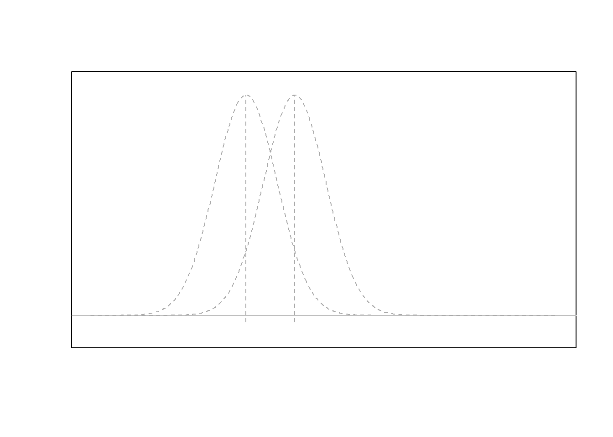
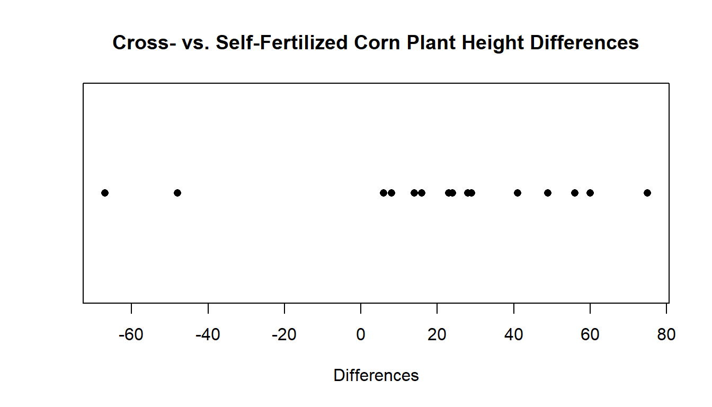
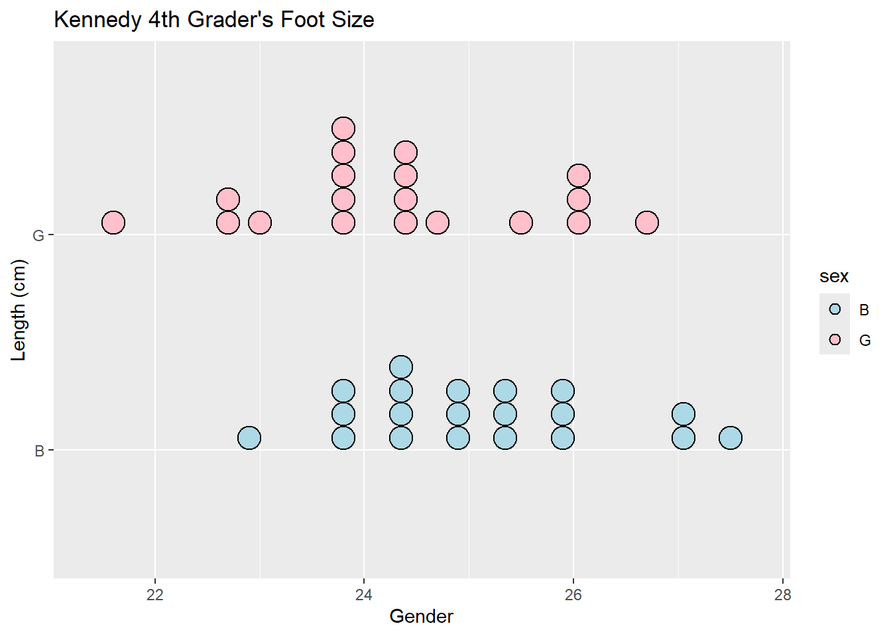
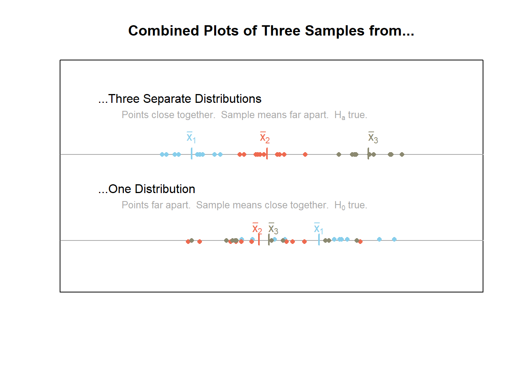
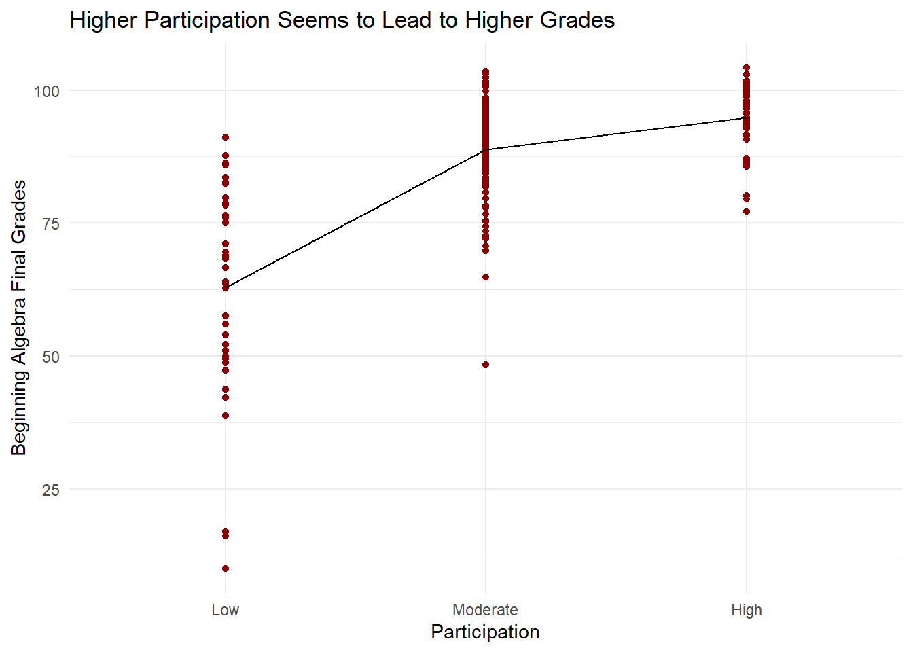
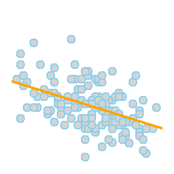
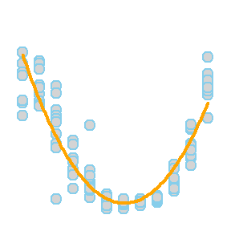
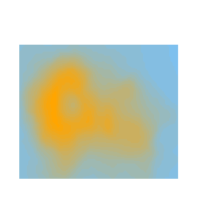

Statistics Notebook
This page, and all pages of this notebook, are meant to be customized to become a useful Guide to Statistical Analysis in R for your current and future self.
Sections
Paige’s Notes : Notes taken throughout different statistic based classes.
R Help : R Studio commands, structuring tips, and tricks.
Describing Data : R Studio commands for graphically and numerically describing data.
Making Inference : Deep dives into the different statistical tests.
Analyses : Statistical analyses that utilizes the tools of collecting, analyzing, and interpreting data to result in informed decision-making.
Search Bar
Search Bar
Loading index…
Table of Contents
These are the statistical tools used to explore and interpret different data types.
One Quantitative Response Variable Y
Graphics
 Y is a single quantitative variable of
interest. This would be like “heights” of BYU-Idaho students.
Y is a single quantitative variable of
interest. This would be like “heights” of BYU-Idaho students.
Test(s) used for this category:
One Sample T-test
Paired Sample T-test
Wilcoxon Signed- Rank Test
Used for one quantitative variable. Pretty simple tbh.
Questions that this answers:
How long are 4th grader’s feet?
What is the average length of feet in the KidsFeet dataset?
These are the best graphics to use:


Examples :
- What is the mean temperature at Airport? (One
Sample)
- can be done with histogram or dot plot!
plot_ly(airquality, x=~Temp,
type="histogram",
marker=list(color="skyblue",
line=list(color="darkgray", width=10))) %>%
layout(title="La Guardia Airport Daily Mean Temperatures", xaxis=list(title="Temperature in Degrees F"))stripchart(airquality$Temp, method="stack", xlab= "Temperature (F)", main="La Guardia Airport Daily Mean Temperature")- You can change the method to “overplot”, “jitter”, or “stack”
- What is the median temperature of La Guardia Airport? (One Sample)
Tests
One Sample t Test
A one sample t test is used when there is a hypothesized value for the population mean \(\mu\) of a single quantitative variable.
Overview
Questions
The one sample t test can be used to answer questions like:
- How long does it take to drive from Rexburg, ID to Salt Lake City, UT on average?
- Is human body temperature really 98.6° F on average?
- Do I spend less than $3 a day,on average, purchasing snacks?
Requirements
This test is only appropriate when both of the following are satisfied.
The sample is representative of the population. (Having a simple random sample is the best way to do this.)
The sampling distribution of the sample mean \(\bar{x}\) can be assumed to be normal. This is a safe assumption when either:
- the population data can be assumed to be normally distributed using a Q-Q Plot
OR
- the size of the sample (n) that was taken from the population is large (at least n > 30, but “large” really depends on how badly the data is skewed).
- If the requirements listed above are satisfied, then the results of the test can be trusted to give meaningful inference about the population.
- If the requirements are not met, then that doesn’t mean the results of the test are necessarily bad, but there is no guarantee that they are good.
Hypotheses
\(H_0: \mu = \text{some number}\)
\(H_a: \mu \ \left\{\underset{<}{\stackrel{>}{\neq}}\right\} \ \text{some number}\)
Examples: analysis resubmits
R Instructions
Console Help Command: ?t.test()
t.test(NameOfYourData$Y, mu = YourNull, alternative = YourAlternative, conf.level = 0.95)
NameOfYourDatais the name of your data set, likemtcarsorKidsFeet.Ymust be a “numeric” vector of quantitative data.YourNullis the numeric value from your null hypothesis for \(\mu\).YourAlternativeis one of the three options:"two.sided","greater","less"and should correspond to your alternative hypothesis.- The value for
conf.level = 0.95can be changed to any desired confidence level, like 0.90 or 0.99. It should correspond to \(1-\alpha\).
Testing Assumptions
library(car)
qqPlot(NameOfYourData$Y)
Example Code
Hover your mouse over the example codes to learn more.
t.test( ‘t.test’
is an R function that performs one and two sample t-tests.
mtcars ‘mtcars’ is a dataset. Type ‘View(mtcars)’ in R to
view the dataset. $ The $ allows us to access any variable from the
mtcars dataset. mpg, ‘mpg’ is Y, a quantitative variable (numeric
vector) from the mtcars dataset.
mu = 20, The numeric value from the null
hypothesis is 20 meaning \(\mu=20\).
alternative = “two.sided”, The alternative hypothesis is “two.sided” meaning
the alternative hypothesis is \(\mu\neq20\). conf.level = 0.95) This
test has a 0.95 confidence level which corresponds to 1−α.
Press Enter to run the code if you have typed
it in yourself. You can also click here to view the output.
Click to Show Output Click to View
Output.
qqPlot( ‘qqPlot’ is a R function from library(car) that creates a qqPlot. mtcars ‘mtcars’ is a dataset. Type ‘View(mtcars)’ in R to view the dataset. $ The $ allows us to access any variable from the mtcars dataset. mpg) ‘mpg’ is a quantitative variable (numeric vector) from the mtcars dataset. Click to Show Output Click to View Output.
Explanation
When we want to check if a claim about the average of a group(population mean \(\mu\)) is true, we often use a test called the “one sample t test”. This test works well when we can assume that the data follows a normal pattern and that we’ve picked our sample randomly from the bigger group we’re interested in.
In the figure below, the null hypothesis \(H_0: \mu = \mu_0\) is represented by the normal distribution (gray) centered at \(\mu_0\). - Note that \(\mu_0\) is just some specified number. - This shows how the null hypothesis represents the assumption about the center of the distribution of the data.
After a hypothesis (null) is established and an alternative hypothesis similarly declared, a simple random sample of data of size \(n\) is obtained from the population of interest. - In the plot above, this is depicted by the points (blue dots) which are centered around their sample mean \(\bar{x}\).
Above the points (blue dots) is another bell-shaped curve (blue dashed line). This curve shows that the alternative hypothesis might fit the data better than the null hypothesis.
The role of the one sample t test is to measure the probability of a sample mean being as extreme or more extreme from the hypothesized value of \(\mu_0\) than the one observed assuming the null hypothesis is true. - This probability is of course the p-value of the test. - This works because the sampling distribution of the sample mean has been assumed to be normal.
In this case, the distribution of the test statistic t, \[
t = \frac{\bar{x}-\mu}{s/\sqrt{n}}
\]
is known to follow a t distribution with \(n-1\) degrees of freedom.
*The mathematics that provide this result are phenominal! You can consult any advanced statistical textbook for the details.
The p-value of the one sample t test represents the probability that the test statistic \(t\) is as extreme or more extreme than the one observed according to a t-distribution with \(n-1\) degrees of freedom.
- If the probability (the p-value) is close enough to zero (smaller than \(\alpha\)), then it is determined that the most plausible hypothesis is the alternative hypothesis, and thus the null is “rejected” in favor of the alternative.
Paired Samples t Test
The paired samples t test is used when a value is hypothesized for the popluation mean of the differences, \(\mu_d\), obtained from paired observations.
Overview
Questions
The Paired Samples t Test can be used to answer questions like:
- From pre-test to post-test is there an improvement on average in the subjects?
- How much taller are husbands than their wives, on average?
- Do hospital patients that are carefully matched together according to reason for being in the hospital, age, gender, ethnicity, height, and weight show increased stay times in the hospital when infected with a nosocomial infection compared to those who were not infected?
Requirements
The test is only appropriate when both of the following are satisfied.
The sample of differences is representative of the population differences.
The sampling distribution of the sample mean of the differences \(\bar{d}\) (\(\bar{x}\) of the differences) can be assumed to be normal. (This second requirement can be assumed to be satisfied when (a) the differences themselves can be assumed to be normal from a Q-Q Plot, or (b) when the sample size \(n\) of the differences is large.)
Hypotheses
\(H_0: \mu_d = \text{some number, but
typically 0}\)
\(H_a: \mu_d \
\left\{\underset{<}{\stackrel{>}{\neq}}\right\} \ \text{some
number, but typically 0}\)
Examples: sleepPaired studentPaired
R Instructions
Console Help Command: ?t.test()
Option 1:
t.test(NameOfYourData$Y1, NameOfYourData$Y2, paired = TRUE, mu = YourNull, alternative = YourAlternative, conf.level = 0.95)
NameOfYourDatais the name of your data set likesleepormtcarsorKidsFeet.Y1must be a “numeric” vector that represents the quantitative data from the first sample of data.Y2must be a “numeric” vector that represents the quantitative data from the second sample of data. This vector must be in the same order as the first sample so that the pairing can take place.YourNullis the numeric value from your null hypothesis for \(\mu_d\).YourAlternativeis one of the three options:"two.sided","greater","less"and should correspond to your alternative hypothesis.- The value for
conf.level = 0.95can be changed to any desired confidence level, like 0.90 or 0.99. It should correspond to \(1-\alpha\).
Testing Assumptions
library(car)
qqPlot(Y1 - Y2)
Example Code
Hover your mouse over the example codes to learn more.
sleep1 <- filter(sleep, group==1) This splits out the “group1” data from the sleep
data set.
sleep2 <-
filter(sleep, group==2) This splits out the
“group2” data from the sleep data set
t.test( ‘t.test’ is an R
function that performs one and two sample t-tests. sleep2$extra, A numeric
vector that represents the hours of extra sleep that the group had with
drug 2. sleep1$extra, A numeric vector that represents the hours of extra
sleep that the same group had with drug 1.
paired=TRUE, Indicates
that this is a paired t-Test. This will cause the subtraction of
sleep2$extra - sleep1$extra to be performed to obtain the paired
differences. To cause the subtraction to occur in the other order,
reverse the order sleep1$extra, sleep2$extra occur in the t.test(…)
function. mu = 0, The numeric value from the null hypothesis 0
meaning the null hypothesis is \(\mu_d=0\). alternative = “two.sided”, The alternative hypothesis is “two.sided” meaning
the alternative hypothesis is \(\mu_d\neq0\). conf.level = 0.95) This
test has a 0.95 confidence level which corresponds to 1 - \(\alpha\).
Press Enter to run the code if you have typed
it in yourself. You can also click here to view the output.
Click to Show Output Click to View
Output.
qqPlot( ‘qqPlot’ is a R function from library(car) that creates a qqPlot. sleep2$extra The hours of extra sleep that the group had with drug 2. - Subtract the hours of extra sleep with drug 1 from the hours of extra sleep with drug 2 to get the difference. sleep1$extra The hours of extra sleep that the same group had with drug 1. ) Closing parenthesis for qqPlot(…) function. Click to Show Output Click to View Output.
Option 2:
Compute the differences yourself instead of using
paired=TRUE.
differences = NameOfYourData$Y1 - NameOfYourData$Y2
t.test(differences, mu = YourNull, alternative = YourAlternative, conf.level = 0.95)
NameOfYourDatais the name of your data set.Y1must be a “numeric” vector that represents the quantitative data from the first sample of data.Y2must be a “numeric” vector that represents the quantitative data from the second sample of data. This vector must be in the same order as the first sample so that the pairing can take place.differencesare the resulting differences obtained from subtractingY1 - Y2.YourNullis the numeric value from your null hypothesis for \(\mu_d\).YourAlternativeis one of the three options:"two.sided","greater","less"and should correspond to your alternative hypothesis.- The value for
conf.level = 0.95can be changed to any desired confidence level, like 0.90 or 0.99. It should correspond to \(1-\alpha\).
Testing Assumptions
library(car)
qqPlot(differences)
Example Code
Hover your mouse over the example codes to learn more.
sleep1 <- filter(sleep, group==1) This splits out the “group1” data from the sleep
data set.
sleep2 <-
filter(sleep, group==2) This splits out the
“group2” data from the sleep data set
differences <- Saved
the computed differences to an object called ‘differences’.
sleep2$extra The hours of extra sleep that the group had with
drug 2. - Subtract the hours of extra sleep with drug 1 from
the hours of extra sleep with drug 2 to get the difference.
sleep1$extra The hours of extra sleep that the same group had
with drug 1.
t.test( ‘t.test’ is an R function that performs one and two
sample t-tests. differences,
‘differences’ are the resulting differences
of the hours of extra sleep with drug 1 and the hours of extra sleep
with drug 2. mu = 0, The numeric value from the null hypothesis 0
meaning the null hypothesis is \(\mu_d=0\). alternative = “two.sided”, The alternative hypothesis is “two.sided” meaning
the alternative hypothesis is \(\mu_d\neq0\). conf.level = 0.95) This
test has a 0.95 confidence level which corresponds to 1 - \(\alpha\).
Press Enter to run the code if you have typed
it in yourself. You can also click here to view the output.
Click to Show Output Click to View
Output.
qqPlot( ‘qqPlot’ is a R function from library(car) that creates a qqPlot. differences) ‘differences’ are the resulting differences of the hours of extra sleep with drug 1 and the hours of extra sleep with drug 2. Click to Show Output Click to View Output.
Explanation
The paired samples t test considers the single mean of all the differences from the paired values. Thus, the paired samples t test essentially becomes a one sample t test on the differences between paired observations. Hence the requirement is that the sampling distribution of the sample mean of the differences, \(\bar{d}\), can be assumed to be normally distributed. (It is also required that the obtained differences represent a simple random sample of the full population of possible differences.)
The paired samples t test is similar to the independent samples t test scenario, except that there is extra information that allows values from one sample to be paired with a value from the other sample. This pairing of values allows for a more direct analysis of the change or difference individuals experience between the two samples.
The points in the plot below demonstrate how points are paired together, and the only thing of interest are the differences between the paired points.

Wilcoxon Signed-Rank Test
For testing hypotheses about the value of the median of:
one sample of quantitative data or
one set of differences from paired data.
- Box plots + Dot plots are great to show off this kind of data
(because it shows the median!)
- Median line closer to the bottom of the box plot = Right Skewed
- Median line is closer to the top of the box plot = Left Skewed
Overview
The nonparametric equivalent of the paired-samples t test as well as the one-sample t test.
- Best for smaller sample sizes where the
distribution of the data is not normal
- The t test is more appropriate when the data is normal or when the sample size is large.
While the test will work in most scenarios it suffers slightly when ties (repeated values) are present in the data. If many ties are present in the data, the test is not appropriate. If only a few ties are present, the test is still appropriate.
This test is similar to the paired-samples t test and the one-sample t test, but it doesn’t assume the data follows a normal distribution (nonparametric equivalent)
It works best when: - You have a small number of samples - Your data doesn’t follow a normal distribution
** The t test is better when your data is normal or when you have a lot of samples.This test usually works fine, but it can have problems if you have many repeated values in your data. If there are just a few repeated values, it’s still okay to use.
Hypotheses
Originally created to test hypotheses about the value of the median
- works as well for the mean when the distribution of the data is symmetrical.
One Sample of Data
\(H_0: \text{Median} = \text{(Some Number)}\)
\(H_a: \text{Median} \ \left\{\underset{<}{\stackrel{>}{\neq}}\right\} \ \text{(Some Number)}\)
Paired Samples of Data
\(H_0: \text{median of differences} = 0\)
\(H_a: \text{median of differences} \ \left\{\underset{<}{\stackrel{>}{\neq}}\right\} \ 0\)
Examples: sleep, CornHeights
R Instructions
Console Help Command:
?wilcox.test()
Paired Data
wilcox.test(Y1, Y2, mu = YourNull, alternative = YourAlternative, paired = TRUE, conf.level = 0.95)
Y1must be a “numeric” vector. One set of measurements from the pair.Y2also a “numeric” vector. Other set of measurements from the pair.YourNullis the numeric value from your null hypothesis for the median of differences from the paired data. Usually zero.YourAlternativeis one of the three options:"two.sided","greater","less"and should correspond to your alternative hypothesis.- The value for
conf.level = 0.95can be changed to any desired confidence level, like 0.90 or 0.99. It should correspond to \(1-\alpha\).
Example Code
Hover your mouse over the example codes to learn more.
wilcox.test( ‘wilcox.test’ is a function for non-parametric one
and two sample tests.
sleep$extra[sleep$group==1], The hours of
extra sleep that the group had with drug 2. sleep$extra[sleep$group==2], The hours of extra sleep that the same group had
with drug 1. mu = 0, The numeric value from the null hypothesis for the
median of differences from the paired data is 0 meaning the null
hypothesis is \(\text{median of differences} =
0\). paired=TRUE, This command forces a “paired” samples test to be
performed. alternative =
“two.sided”, The alternative hypothesis is
“two.sided” meaning the alternative hypothesis is \(\text{median of differences}
\neq0\). conf.level = 0.95)
This test has a 0.95 confidence level which
corresponds to 1 - \(\alpha\).
Press Enter to run the code if you have typed
it in yourself. You can also click here to view the output.
… Click to View Output.
One Sample
wilcox.test(object, mu = YourNull, alternative = YourAlternative, conf.level = 0.95)
objectmust be a “numeric” vector.YourNullis the numeric value from your null hypothesis for the median (even though it says “mu”).YourAlternativeis one of the three options:"two.sided","greater","less"and should correspond to your alternative hypothesis.- The value for
conf.level = 0.95can be changed to any desired confidence level, like 0.90 or 0.99. It should correspond to \(1-\alpha\).
Example Code
Hover your mouse over the example codes to learn more.
wilcox.test( ‘wilcox.test’ is a function for non-parametric one
and two sample tests. mtcars ‘mtcars’ is a dataset. Type ‘View(mtcars)’ in R to
view the dataset. $ The $ allows us to access any variable from the
mtcars dataset. mpg, ‘mpg’ is a quantitative variable (numeric vector)
from the mtcars dataset. mu = 20,
The numeric value from the null hypothesis
is 20 meaning \(\mu = 20\).
alternative = “two.sided”, The alternative is “two.sided” meaning the
alternative hypothesis is \(\mu\neq20\). conf.level = 0.95) This
test has a 0.95 confidence level which corresponds to 1−α.
Press Enter to run the code if you have typed
it in yourself. You can also click here to view the output.
… Click to View Output.
Explanation
In many cases it is of interest to perform a hypothesis test about the location of the center of a distribution of data. The Wilcoxon Signed Rank Test allows a nonparametric approach to doing this.
The Wilcoxon Signed-Rank Test covers two important scenarios:
- One sample of data from a population. (Not very common.)
- The differences obtained from paired data. (Very common.)
The Wilcoxon methods are most easily explained through examples, beginning with the paired data for which the method was originally created.
** Scroll down for the One Sample Example if that is what you are really interested in. However, it is still recommended that you read the paired data example first.
Paired Data Example
Note: the data for this example comes from the original 1945 paper Individual Comparison by Ranking Methods by Frank Wilcoxon.
Background
Height differences “between cross- and self- fertilized corn plants of the same pair” were collected. The experiment hypothesized that the center of the distribution of the height differences would be zero, with the alternative being that the center was not zero. The result of the data collection was 15 height differences:
Differences: 14, 56, 60, 16, 6, 8, -48, 49, 24, 28, 29, 41, -67, 23, 75
Step 1
The first step of the Wilcoxon Signed Rank Test is to order the differences from smallest magnitude to largest magnitude. Negative signs are essentially ignored at this point and only magnitudes of the numbers matter.
Sorted Differences: 6, 8, 14, 16, 23, 24, 28, 29, 41, -48, 49, 56, 60, -67, 75
Step 2
The next step is to rank the ordered values. Negative signs are attached to the ranks corresponding to negative numbers.
| Differences: | 6 | 8 | 14 | 16 | 23 | 24 | 28 | 29 | 41 | -48 | 49 | 56 | 60 | -67 | 75 |
| Ranks: | 1 | 2 | 3 | 4 | 5 | 6 | 7 | 8 | 9 | -10 | 11 | 12 | 13 | -14 | 15 |
Note that the ranks will always be of the form \(1, 2, \ldots, n\). In this case, \(n=15\).
Step 3
The ranks are then put into two groups.
| Negative Ranks | Positive Ranks |
|---|---|
| -10, -14 | 1, 2, 3, 4, 5, 6, 7, 8, 9, 11, 12, 13, 15 |
Step 4
One of the groups is summed, usually the group with the fewest observations. Only the absolute values of the ranks are summed.
Sum of Negative Ranks: \(\left|-10\right| + \left|-14\right| = 24\)
The sum of the ranks becomes the test statistic of the Wilcoxon Test. The test statistic is sometimes called \(W\) or \(V\) or \(U\).
Step 5
The \(p\)-value of the test is then obtained by computing the probability of the test statistic being as extreme or more extreme than the one obtained. This is done by first computing the probability of all possible values the test statistic could have obtained using mathematical counting techniques. This is a very tedious process that only a mathematician would enjoy pursuing. However, the end result is fairly easily understood. If you are interested, read the details.
Computing the probabilities of all possible sums creates a distribution of the test statistic (shown in the plot above). Note that the test statistic is obtained in Step 4 (above) by taking the sum of the ranks. Once the distribution of the test statistic is established, the \(p\)-value of the test can be calculated as the combined probability of possible sums that are as extreme or more extreme than the one observed.
For this example, it turns out that the probability of getting a sum of (the absolute value of) negative ranks as extreme or more extreme than \(24\) is \(p=0.04126\) (the sum of the probabilities of the red bars in the plot above). Thus, at the \(\alpha=0.05\) level we would reject the null hypothesis that the center of the distribution of differences is zero. We conclude that the center of the distribution is greater than zero because the sum of negative ranks is much smaller than we expected under the zero center hypothesis (the null). Thus, there is sufficient evidence to conclude that the centers of the distributions of “cross- and self-fertilized corn plants” heights are not equal. One is greater than the other. Notice how the following dot plot shows that the differences are in favor of the cross-fertilized plants (the first group in the subtraction) being taller. This is true even though two self-fertilized plants were much taller than their cross-fertilized counterpart (the two negative differences).

Comment
If the distribution of differences is symmetric, then the hypotheses can be written as \[ H_0: \mu = 0 \] \[ H_a: \mu \neq 0 \]
If the distribution is skewed, then the hypotheses technically refer to the median instead of the mean and should be written as
\[ H_0: \text{median} = 0 \] \[ H_a: \text{median} \neq 0 \]
One Sample Example {#one}
The idea behind the one sample Wilcoxon Signed Rank test is nearly identical to the paired data. The only change is that the median must be subtracted from all observed values to obtain the differences. Note that the mean is equal to the median when data is symmetric.
Background
Suppose we are interested in testing to see if the median hourly wage of BYU-Idaho students during their off-track employment is equal to the minimum wage in Idaho, $7.25 an hour as of January 1st, 2015. Five randomly sampled hourly wages from BYU-Idaho Math 221B students provides the following data.
Wages: $6.00, $9.00, $8.10, $18.00, $10.45
The differences are then obtained by subtracting the hypothesized value for the median (or mean if the data is symmetric) from all observations.
Differences: -1.25, 1.75, 0.85, 10.75, 3.20
Note: from this point down, the wording of this example is identical to the paired data example (above) with the numbers changed to match \(n=5\). It is useful to continue reading to reinforce the idea of the Wilcoxon Signed Rank Test, but no new knowledge will be presented.
Step 1
The first step of the Wilcoxon Signed Rank Test is to order the differences from smallest magnitude to largest magnitude. Negative signs are essentially ignored at this point and only magnitudes of the numbers matter.
Sorted Differences: 0.85, -1.25, 1.75, 3.20, 10.75
Step 2
The next step is to rank the ordered values. Negative signs are attached to the ranks corresponding to negative numbers.
Ranks: 1, -2, 3, 4, 5
Note that the ranks will always be of the form \(1, 2, \ldots, n\). In this case, \(n=5\).
Step 3
The ranks are then put into two groups.
| Negative Ranks | Positive Ranks |
|---|---|
| -2 | 1, 3, 4, 5 |
Step 4
One of the groups is summed, usually the group with the fewest observations.
Sum of Negative Ranks: \(\left|-2\right| = 2\)
Step 5
The \(p\)-value of the test is then obtained by computing the probabilities of all possible sums using mathematical counting techniques. This is a very tedious process that only a mathematician would enjoy pursuing. However, the end result is fairly easily understood. If you are interested, read the details.
Details
When there are \(n=5\) ranks, the possible sums of ranks range from 0 to 15 and hit every integer in between, i.e., \(1, 2, 3, \ldots, 15\). (Note, if summing the negative ranks these sums would technically all be negative.)
To verify that \(15\) is the largest sum possible for \(n=5\) ranks, note that:
\(1+5 = 6\),
\(2 + 4 = 6\),
and finally \(3 = \frac{6}{2}\).
Thus, there are 2 sums of 6 and one sum of \(\frac{6}{2}\). This could be said in a mathematically equivalent way by stating there are \(\frac{4}{2}\) sums of 6 and one sum of \(\frac{6}{2}\). By multiplication this gives \[ \frac{4}{2}\cdot\frac{6}{1} + \frac{1}{1}\cdot\frac{6}{2} = \frac{4\cdot6 + 1\cdot6}{2} = \frac{5\cdot6}{2} = \frac{n(n+1)}{2} = 15 \]
The probability of each sum occurring is computed by counting all of the ways a certain sum can occur (combinations) and dividing by the total number of sums possible. (There are 32 total different groups of ranks possible when there are \(n=5\) ranks.)
For example, a sum of 1 can happen only one way, only the rank of 1 is in the group. A sum of 2 can also only happen 1 way. The sum of 3 however, can happen two ways: we could have the ranks of 1 and 2 in the group, or just the rank of 3 in the group. A similar counting technique is then implemented for each possible sum. After all the calculations are performed, the distribution of possible sums looks like what is shown in the following plot, where the red bars show those sums that are as extreme or more extreme than a sum of \(2\) (or its opposite of \(15-2=13\)).
Computing the probabilities of all possible sums creates a distribution of the test statistic (shown in the plot above). Note that the test statistic is obtained in Step 4 (above) by taking the sum of the ranks. Once the distribution of the test statistic is established, the \(p\)-value of the test can be calculated as the combined probability of possible sums that are as extreme or more extreme than the one observed.
For this example, it turns out that the probability of getting a sum of negative ranks as extreme or more extreme than \(-2\) is \(p=0.1875\) (the sum of the probabilities of the red bars in the plot above). Thus, at the \(\alpha=0.05\) level we would fail to reject the null hypothesis that the center of the distribution of differences is zero. We will continue to assume the null hypothesis was true, that the median off-track hourly wage of BYU-Idaho students is the same as the Idaho minimum wage.
Final Comment
Notice that when the sample size is large the distribution of the test statistic can be approximated by a normal distribution. Most software applications use this approximation when the sample size is over \(50\), i.e., for \(n\geq50\) because computing all the possible sums of ranks becomes incredibly time consuming. Thus, for large sample sizes the results will be almost identical whether the Wilcoxon Tests or a t Test is used.
Quantitative Y | Categorical X (2 Groups)
Graphics
 Y is a single quantitative variable of
interest. This would be like “heights” of BYU-Idaho students. X is a
qualitative (categorical) variable of interest like “gender” that has
just two groups “A” and “B”. So this logo represents situtations where
we would want to compare heights of male (group A) and female (group B)
students.
Y is a single quantitative variable of
interest. This would be like “heights” of BYU-Idaho students. X is a
qualitative (categorical) variable of interest like “gender” that has
just two groups “A” and “B”. So this logo represents situtations where
we would want to compare heights of male (group A) and female (group B)
students.
Test(s) used for this category:
Independent Samples T-test
- Analysis : High School Seniors t Test
Wilcoxon Rank Sum (Mann- Whitney Test)
- Analysis : The Benefits of Word Recall Strategies
Used for the comparison of two groups, Quantitative Y (ex. height, weight, money, distance) and Categorical X (ex. gender, birth month, phone number)
Questions that this answers:
How long are boys feet and how long are girls feet?
Do boys (B) or girls (G) have longer feet, on average, in the KidsFeet dataset?
These are the best graphics to use:


Examples:
How long are boys feet and how long are girls feet? (Independent Sample)
- Can use box or dot plot!
plot_ly(KidsFeet, y=~length, x=~as.factor(sex),type="box",color=~sex, colors=c("lightblue","pink")) %>%
layout( title="4th Grader's Average Foot Size",
xaxis=list(title="Gender"),yaxis=list(title="Length (cm)"))ggplot(KidsFeet, aes(x=factor(sex),y=length, fill=sex)) +
coord_flip() +
geom_dotplot(binaxis="y",
stackdir="up",
position="dodge",
dotsize=0.45,
binwidth=0.5) +
scale_fill_manual(values=c("B"="lightblue","G"="pink")) +
labs(title= "Kennedy 4th Grader's Foot Size", x="Length (cm)", y="Gender")
Does the Meshed or Before approach have any positive benefits on memory recall when it comes to remembering content? (Wilcoxon Rank Sum Test)
- Dot plot over box plot shows the distribution and the individuals within each distribution

Tests
Independent Samples t Test
The independent samples t test is used when a value is hypothesized for the difference between two (possibly) different population means, \(\mu_1 - \mu_2\).
- finds the mean of each data set, then subtracts those means for
their difference
- two groups don’t depend on each other’s results
Overview
Questions
The Independent Samples t Test can be used to answer questions like:
- Are boys taller than girls on average?
- Do students who show up to class everyday get higher scores on average than those who don’t?
- Do you take more steps on average on weekdays or on weekends?
Requirements
The test is only appropriate when both of the following are satisfied.
Both samples are representative of the population. (Simple random samples are the best way to do this.)
The sampling distribution of the difference of the sample means \((\bar{x}_1 - \bar{x}_2)\) can be assumed to be normal.
- This is a safe assumption when the sample size of each group is \(30\) or greater or when the population data from each group can be assumed to be normal with a Q-Q Plot.
Hypotheses
\(H_0: \mu_1 - \mu_2 = \text{some number, but typically 0}\)
\(H_a: \mu_1 - \mu_2 \ \left\{\underset{<}{\stackrel{>}{\neq}}\right\} \ \text{some number, but typically 0}\)
R Instructions
Console Help Command: ?t.test()
There are two ways to perform the test.
Option 1:
t.test(Y ~ X, data = YourData, mu = YourNull, alternative = YourAlternative, conf.level = 0.95)
Ymust be a “numeric” vector fromYourDatathat represents the data for both samples.Xmust be a “factor” or “character” vector fromYourDatathat represents the group assignment for each observation. There can only be two groups specified in this column of data.YourNullis the numeric value from your null hypothesis for \(\mu_1-\mu_2\).YourAlternativeis one of the three options:"two.sided","greater","less"and should correspond to your alternative hypothesis.- The value for
conf.level = 0.95can be changed to any desired confidence level, like 0.90 or 0.99. It should correspond to \(1-\alpha\).
Testing Assumptions
library(car)
qqPlot(Y ~ X, data=YourData)
Example Code
Hover your mouse over the example codes to learn more.
t.test( ‘t.test’
is an R function that performs one and two sample t-tests.
length ‘length’ is a quantitative variable (numeric
vector). ~ ‘~’ is the tilde symbol. sex, ‘sex’ is a ‘factor’
or ‘character’ vector that represents the group assignment for each
observation. There are two groups.
data=KidsFeet, ‘KidsFeet’ is a dataset in
library(mosaic). Type View(KidsFeet) to view it. mu = 0, The numeric value
from the null hypothesis for μ1-μ2 is 0 meaning the null hypothesis is
\(\mu1-\mu2 = 0\) alternative = “two.sided”, The alternative is “two-sided” meaning the
alternative hypothesis is \(\mu1-\mu2 \neq
0\). conf.level = 0.95)
This test has a 0.95 confidence level which
corresponds to \(1-\alpha\)
Press Enter to run the code if you have typed
it in yourself. You can also click here to view the output.
Click to Show Output Click to View
Output.
qqPlot( ‘qqPlot’ is a R function from library(car) that creates a qqPlot. length ‘length’ is a quantitative variable (numeric vector). ~ ‘~’ is the tilde symbol. sex, ‘sex’ is a “factor” or “character” vector that represents the group assignment for each observation. There are two groups. data=KidsFeet) ‘KidsFeet’ is a dataset in library(mosaic). Type View(KidsFeet) to view it. Click to Show Output Click to View Output.

Option 2:
t.test(NameOfYourData$Y1, NameOfYourData$Y2, mu = YourNull, alternative = YourAlternative, conf.level = 0.95)
NameOfYourDatais the name of your data set.Y1must be a “numeric” vector that represents the quantitative data from the first sample.Y2must be a “numeric” vector that represents the quantitative data from the second sample.YourNullis the numeric value from your null hypothesis for the difference of \(\mu_1-\mu_2\). This is typically zero.YourAlternativeis one of the three options:"two.sided","greater","less"and should correspond to your alternative hypothesis.- The value for
conf.level = 0.95can be changed to any desired confidence level, like 0.90 or 0.99. It should correspond to \(1-\alpha\).
Testing Assumptions
library(car)
par(mfrow=c(1,2))
qqPlot(NameOfYourData$Y1)
qqPlot(NameOfYourData$Y2)
Example Code
Hover your mouse over the example codes to learn more.
t.test( ‘t.test’
is an R function that performs one and two sample t-tests.
KidsFeet$length[KidsFeet$sex == “B”],
A numeric vector that represents the
quantitative data or the foot length for the first sample of data which
in this case is the boys.
KidsFeet$length[KidsFeet$sex == “G”], A
numeric vector that represents the quantitative data or the foot length
for the second sample of data which in this case is the girls.
mu = 0, The
numeric value from the null hypothesis for μ1-μ2 is 0 meaning the null
hypothesis is \(\mu1-\mu2 = 0\)
alternative = “two.sided”, The alternative is “two-sided” meaning the
alternative hypothesis is \(\mu1-\mu2 \neq
0\). conf.level = 0.95)
This test has a 0.95 confidence level which
corresponds to \(1-\alpha\)
Press Enter to run the code if you have typed
it in yourself. You can also click here to view the output.
… Click to View Output.
par( ‘par’ is a R
function that can be used to set or query graphical parameters.
mfrow=c(1,2)) Parameter is being set. The first item inside the
combine function c() is the number of rows and the second is the number
of columns.
qqPlot( ‘qqPlot’ is a R function from library(car) that
creates a qqPlot.
KidsFeet$length[KidsFeet$sex == “B”]) A
numeric vector that represents the quantitative data or the foot length
for the first sample of data which in this case is the boys.
qqPlot( ‘qqPlot’ is a R function from library(car) that
creates a qqPlot.
KidsFeet$length[KidsFeet$sex == “G”]) A
numeric vector that represents the quantitative data or the foot length
for the second sample of data which in this case is the girls.
… Click to View Output.
Explanation
The first figure below depicts the scenario where the difference in means of two separate normal distributions is non-zero. - In other words, the two distributions have different means, \(\mu_1\) and \(\mu_2\), respectively. - It is worth emphasizing that the values of \(\mu_1\) and \(\mu_2\) are unknown to the researcher.
The only thing observed are two separate samples of data (blue dots) of sizes \(n_1\) and \(n_2\), respectively.
For the scenario depicted, the null hypothesis that \(H_0: \mu_1 - \mu_2 = 0\) (i.e., that \(\mu_1=\mu_2\)) is rejected in favor of the alternative that \(H_a: \mu_1 - \mu_2 \neq 0\) based on the sample data observed. - This dicision would be correct as the true difference in means, \(\mu_1-\mu_2\) is non-zero in this case.
When the null hypothesis is true, that \(H_0: \mu_1 - \mu_2 = 0\) : - the test statistic \(t\) that is obtained by measuring the distance between the two sample means, \(\bar{x}_1-\bar{x}_2\) - appropriately standardizing the result follows a \(t\) distribution with degrees of freedom less than or equal to \(n_1+n_2-2\). - Thus, the \(p\)-value of the independent samples \(t\) test is obtained by using this \(t\) distribution to calculate the probability of a test statistic \(t\) being as extreme or more extreme than the one observed assuming the null hypothesis is true. \[ t = \frac{(\bar{x}_1 - \bar{x}_2) - (\mu_1 - \mu_2)}{\sqrt{s_1/n_1+s_2/n_2 }} \]
Wilcoxon Rank Sum (Mann-Whitney) Test
For testing the equality of the medians of two (possibly different) distributions of a quantitative variable.
- Box plots + Dot plots are great to show off this kind of data
(because it shows the median!)
- Median line closer to the bottom of the box plot = Right Skewed
- Median line is closer to the top of the box plot = Left Skewed
Overview
The nonparametric equivalent of the Independent Samples t Test. Can also be used when data is ordered (ordinal) but does not have an exact measurement. For example, first place, second place, and so on.
The Independent Samples t Test is more appropriate when the distributions are normal, or when the sample size for each sample is large.
The test is negatively affected when there are ties (repeated values) present in the data, but the results are still useful if there are relatively few ties.
Hypotheses
Originally designed to test for the equality of medians from two identically shaped distributions.
However, the test also allows for the more general hypotheses that one distribution is stochastically greater than the other.
\(H_0: \text{the distributions are stochastically equal}\)
\(H_a: \text{one distribution is stochastically greater than the other}\)
If these hypotheses are used, then the distributions do not have to be identically distributed.
(Note: Men’s heights are stochastically greater than women’s heights because men are generally taller than women, but not all men are taller than all women.)
Examples: BugSpray, MoralIntegration
R Instructions
Console Help Command:
?wilcox.test()
There are two ways to perform the test.
Option 1:
wilcox.test(Y ~ X, data = YourData, mu = YourNull, alternative = YourAlternative, conf.level = 0.95)
Ymust be a “numeric” vector fromYourDatathat represents the data for both samples.Xmust be a “factor” or “character” vector fromYourDatathat represents the group assignment for each observation. There can only be two groups specified in this column of data.YourNullis the numeric value from your null hypothesis for the difference in medians from the two groups.YourAlternativeis one of the three options:"two.sided","greater","less"and should correspond to your alternative hypothesis.- The value for
conf.level = 0.95can be changed to any desired confidence level, like 0.90 or 0.99. It should correspond to \(1-\alpha\).
Example Code
Hover your mouse over the example codes to learn more.
wilcox.test( ‘wilcox.test’ is a function for non-parametric one
and two sample tests. length
‘length’ is a quantitative variable (numeric
vector). ~ ‘~’ is the tilde symbol. sex, ‘sex’ is a ‘factor’
or ‘character’ vector that represents the group assignment for each
observation. There are two groups.
data=KidsFeet, ‘KidsFeet’ is a dataset in
library(mosaic). Type View(KidsFeet) to view it. mu = 0, The numeric value
from the null hypothesis for the difference in medians from the two
groups is 0 meaning the null hypothesis is \(\text{difference in medians} = 0\)
alternative = “two.sided”, The alternative is “two-sided” meaning the
alternative hypothesis is \(\text{difference
in medians} \neq 0\).
conf.level = 0.95) This test has a 0.95
confidence level which corresponds to \(1-\alpha\)
Press Enter to run the code if you have typed
it in yourself. You can also click here to view the output.
… Click to View Output.
Option 2:
wilcox.test(object1, object2, mu = YourNull, alternative = YourAlternative, conf.level = 0.95)
object1must be a “numeric” vector that represents the first sample of data.obejct2must be a “numeric” vector that represents the second sample of data.YourNullis the numeric value from your null hypothesis for the difference in medians from the two groups.YourAlternativeis one of the three options:"two.sided","greater","less"and should correspond to your alternative hypothesis.- The value for
conf.level = 0.95can be changed to any desired confidence level, like 0.90 or 0.99. It should correspond to \(1-\alpha\).
Example Code
wilcox.test( ‘wilcox.test’ is a function for non-parametric one
and two sample tests.
KidsFeet$length[KidsFeet$sex == “B”], A
numeric vector of foot length for the first sample of data or for the
group of boys.
KidsFeet$length[KidsFeet$sex == “G”], A
numeric vector of foot length for the second sample of data or for the
group of girls. mu = 0, The numeric value from the null hypothesis for the
difference in medians from the two groups is 0 meaning the null
hypothesis is \(\text{difference in medians} =
0\) alternative =
“two.sided”, The alternative is “two-sided”
meaning the alternative hypothesis is \(\text{difference in medians} \neq
0\). conf.level = 0.95)
This test has a 0.95 confidence level which
corresponds to \(1-\alpha\)
Press Enter to run the code if you have typed
it in yourself. You can also click here to view the output.
… Click to View Output.
Explanation
In many cases it is of interest to perform a hypothesis test concerning the equality of the centers of two (possibly different) distributions. In other words, an independent samples test. The Wilcoxon Rank Sum Test allows a nonparametric approach to doing this. It is often considered the nonparametric equivalent of the independent samples t test.
The method is most easily explained through an example. The theory behind it is very similar to the theory behind the Wilcoxon Signed-Rank Test.
Independent Samples Data Example
Note: the data for this example comes from the original 1945 paper Individual Comparison by Ranking Methods by Frank Wilcoxon.
Background
The percent of flies (bugs) killed from two different concentrations of a certain spray were recorded from 16 different trials, 8 trials per treatment concentration. The experiment hypothesized that the center of the distributions of the percent killed by either concentration were the same. In other words, that both treatments were equally effective. The alternative hypothesis was that the treatments differed in their effectiveness.
| Spray Concentration | Percent Killed |
|---|---|
| A | 68, 68, 59, 72, 64, 67, 70, 74 |
| B | 60, 67, 61, 62, 67, 63, 56, 58 |
Step 1
The first step of the Wilcoxon Rank Sum Test is to order all the data from smallest magnitude to largest magnitude, while keeping track of the group.
| Sorted Data | ||||||||||||||||
|---|---|---|---|---|---|---|---|---|---|---|---|---|---|---|---|---|
| Percent Killed | 56 | 58 | 59 | 60 | 61 | 62 | 63 | 64 | 67 | 67 | 67 | 68 | 68 | 70 | 72 | 74 |
| Concentration | B | B | A | B | B | B | B | A | A | B | B | A | A | A | A | A |
Step 2
The next step is to rank the ordered values.
| Sorted Data | ||||||||||||||||
|---|---|---|---|---|---|---|---|---|---|---|---|---|---|---|---|---|
| Percent Killed | 56 | 58 | 59 | 60 | 61 | 62 | 63 | 64 | 67 | 67 | 67 | 68 | 68 | 70 | 72 | 74 |
| Concentration | B | B | A | B | B | B | B | A | A | B | B | A | A | A | A | A |
| Rank | 1 | 2 | 3 | 4 | 5 | 6 | 7 | 8 | 9 | 10 | 11 | 12 | 13 | 14 | 15 | 16 |
Note that the ranks will always be of the form \(1, 2, \ldots, n\). In this case, \(n=16\).
Any ranks that are tied need to have the average rank assigned to each of those that are tied.
| Sorted Data | ||||||||||||||||
|---|---|---|---|---|---|---|---|---|---|---|---|---|---|---|---|---|
| Percent Killed | 56 | 58 | 59 | 60 | 61 | 62 | 63 | 64 | 67 | 67 | 67 | 68 | 68 | 70 | 72 | 74 |
| Concentration | B | B | A | B | B | B | B | A | A | B | B | A | A | A | A | A |
| Rank | 1 | 2 | 3 | 4 | 5 | 6 | 7 | 8 | 10 | 10 | 10 | 12.5 | 12.5 | 14 | 15 | 16 |
Step 3
The ranks are then returned to their original groups.
| Ranks of Spray A | Ranks of Spray B |
|---|---|
| 3, 8, 10, 12.5, 12.5, 14, 15, 16 | 1, 2, 4, 5, 6, 7, 10, 10 |
Step 4
The ranks are summed for one of the groups. (It does not matter which group.)
Sum of Ranks for Spray A: \[ 3+8+10+12.5+12.5+14+15+16 = 91 \]
Step 5
The \(p\)-value of the test is then obtained by computing the probabilities of all possible sums that one group can achieve using mathematical counting techniques. This is a very tedious process that only a mathematician would enjoy pursuing. However, the end result is fairly easily understood. If you are interested, read the details.
Details
When there are \(n=16\) ranks, with just \(8\) of the ranks assigned to one group, the possible sums of ranks range from \(36\) to \(100\) and include every integer in between, i.e., \(36, 37, 38, \ldots, 100\).
Note that the smallest sum would be obtained if the ranks 1-8 were in the group. The largest sum would be obtained if the ranks 9-16 were in the group.
The probability of each possible sum occurring is computed by counting all of the ways a certain sum can occur (combinations) and dividing by the total number of sums possible. (There are 12,870 total different sets of ranks possible when there are \(n=16\) ranks and \(8\) are assigned to one group.)
The distribution of possible sums looks like what is shown in the following plot, where the red bars show those sums that are as extreme or more extreme than a sum of \(91\) (or its opposite of \(136-91=45\)).
Computing the probabilities of all possible sums creates a distribution of the test statistic (shown in the plot above). Note that the test statistic is obtained in Step 4 (above) by taking the sum of the ranks. Once the distribution of the test statistic is established, the \(p\)-value of the test can be calculated as the combined probability of possible sums that are as extreme or more extreme than the one observed.
For this example, it turns out that the probability of getting a sum of negative ranks as extreme or more extreme than \(91\) is \(p=0.01476\) (the sum of the probabilities of the red bars in the plot above). Thus, at the \(\alpha=0.05\) level we would reject the null hypothesis that the difference in the center of the distributions is zero. We conclude that the Spray Concentration A is more effective at killing flies (bugs).
Comment
The hypotheses for the Wilcoxon Rank Sum Test are difficult to write out in simple mathematical statements. The test is often referred to as a test of medians, but goes deeper than this. Technically, it allows us to determine if one distribution is stochastically larger than another. In other words, if one distribution typically gives larger values than does another distribution. If the distributions are identically shaped and have the same spread, then this implies the medians (and means) are different.
Thus, the hypotheses for the test can be written mathematically as \[ H_0: \text{difference in medians} = 0 \] \[ H_a: \text{difference in medians} \neq 0 \] or even as \[ H_0: \mu_1-\mu_2 = 0 \] \[ H_a: \mu_1-\mu_2 \neq 0 \]
However, it is important to remember that the estimated difference in location parameters that results from the test does not provide a measurement on either of these things. However, the \(p\)-value can lead us to determine whether to reject, or fail to reject the null, whichever of the above hypotheses is used.
As stated in the R help file for this test
?wilcox.test() “the estimator for the difference in
location parameters does not estimate the difference in medians (a
common misconception) but rather the median of the difference between a
sample from [the first population] and a sample from [the second
population].” These are technical details that most people ignore
without encountering too much difficulty. However, it does remind us
that the t test is more easily interpreted whenever it is appropriate to
use that test.
Final Comment
Notice that when the sample size is large the distribution of the test statistic can be approximated by a normal distribution. Most software applications use this approximation when the sample size is over \(50\), i.e., for \(n\geq50\) because computing all the possible sums of ranks becomes incredibly time consuming. Thus, for large sample sizes the results will be almost identical whether the Wilcoxon Tests or a t Test is used.
Quantitative Y | Categorical X (3+ Groups)
Graphics
 Y is a single quantitative variable of
interest, like “heights” of BYU-Idaho students. X is a categorical
(qualitative) variable like which Math 221 you took, 221A, 221B, or
221C. In other words, X has three or more groups. So “Classrank” could
be X, with groups “Freshman”, “Sophomore”, “Junior”, and
“Senior”.
Y is a single quantitative variable of
interest, like “heights” of BYU-Idaho students. X is a categorical
(qualitative) variable like which Math 221 you took, 221A, 221B, or
221C. In other words, X has three or more groups. So “Classrank” could
be X, with groups “Freshman”, “Sophomore”, “Junior”, and
“Senior”.
Test(s) used for this category:
One-Way ANOVA (means)
Block Design
Kruskal-Wallis Rank Sum Test (distributions)
- Analysis : College Student’s Food Perception
Used comparing several groups based on means or distributions:
How long are their feet based of width and gender?
Are there certain months of the year that are associated with children having longer feet, on average, than others?


- Does a college student’s perception of food result in a change in their weight? (Kruskal-Wallis Rank Sum Test)
# Read data
food <- read_csv("C:/Users/paige/OneDrive/Documents/Fall Semester 2024/MATH 325/Statistics-Notebook-master/Data/food.csv")
# Data transformation and cleaning
food_cleaned <- food %>%
# Convert weight to numeric right away
mutate(weight = as.numeric(weight)) %>%
# Remove rows with NA weight or missing drink values
filter(!is.na(weight) & !is.na(drink)) %>%
# Create a new column `Food Perception Score`
mutate(`Food Perception Score` =
ifelse(breakfast == "Cereal", 0,
ifelse(breakfast == "Donut", 1, 0)) +
ifelse(fries == "1", 1, ifelse(fries == "2", 0, 0)) +
ifelse(drink == "orange juice", 0, ifelse(drink == "soda", 1, 0)) +
ifelse(soup == "1", 0, ifelse(soup == "2", 1, 0)))
# Create plots
boxplot(weight ~ `Food Perception Score`, data=food_cleaned,
col="lightgreen", xlab="Food Perception Score", main="Weight of College Students", ylab="Weight (lbs)")
stripchart(weight ~ `Food Perception Score`, data=food_cleaned, pch=16, vertical=TRUE, add=TRUE, col="palegreen4")
Tests
One-way ANOVA
Each experimental unit is assigned to exactly one factor-level combination. Another way to say this is “one measurement per individual” (no repeated measures) and “equal numbers of individuals per group”.
Overview
An ANOVA is only appropriate when all of the following are satisfied.
The sample(s) of data can be considered to be representative of their population(s).
The data is normally distributed in each group. (This can safely be assumed to be satisfied when the residuals from the ANOVA can be assumed to be normally distributed when seen in a Q-Q Plot.)
The population variance of each group can be assumed to be the same. (This can be safely assumed to be satisfied when the residuals from the ANOVA show constant variance, i.e., are similarly vertically spread out in a Residuals versus fitted-values plot.)
- comparing means
Hypotheses
For a One-way ANOVA
\[ H_0: \mu_1 = \mu_2 = \ldots = \mu \] \[ H_a: \mu_i \neq \mu \ \text{for at least one} \ i \]
Mathematical Model
A typical model for a one-way ANOVA is of the form \[ Y_{ij} = \mu_i + \epsilon_{ij} \] where \(\mu_i\) is the mean for level (group) \(i\), and \(\epsilon_{ij} \sim N(0,\sigma^2)\) is the error term for each point \(j\) within level (group) \(i\).
R Instructions
Console Help Command: ?aov()
myaovis some name you come up with to store the results of theaov()test.Ymust be a “numeric” vector of the quantitative response variable.Xis a qualitative variable (should haveclass(X)equal tofactororcharacter. If it does not, useas.factor(X)inside theaov(Y ~ as.factor(X),...)command.YourDataSetis the name of your data set.
Perform the ANOVA
myaov <- aov(Y ~ X, data=YourDataSet)
summary(myaov)
Diagnose ANOVA Assumptions
par(mfrow=c(1,2))
plot(myaov, which=1:2)
Example Code
Hover your mouse over the example codes to learn more.
Perform the ANOVA
chick.aov <-
Saves the results of the ANOVA test as an object named
‘chick.aov’. aov( ‘aov()’ is a function in R used to perform the
ANOVA. weight Y is ‘weight’, which is a numeric variable from the
chickwts dataset. ~ ‘~’ is the tilde symbol used to separate the Y and
X in a model formula. feed, X is ‘feed’, which is a qualitative variable in the
chickwts dataset, or more specifically, a factor with six levels:
“casein”, “horsebean”, and so on… Use str(chickwts) to see this.
data = chickwts) ‘chickwts’ is a dataset in R.
summary(
‘summary()’ shows the results of the ANOVA. chick.aov) ‘chick.aov’ is
the name of the ANOVA.
Press Enter to run the code if you have typed
it in yourself. You can also click here to view the output.
Click to View Output Click to View
Output.
Diagnose the ANOVA
par( ‘par’ is a R
function that can be used to set or query graphical parameters.
mfrow = c(1,2)) The mfrow parameter controls “multiple
frames on a row”. In this case, the c(1,2) specifies 1 row of 2 plots.
This will cause the two diagnostic plots to be placed side-by-side.
plot( ‘plot’ is a R function for the plotting of R
objects. chick.aov, ‘chick.aov’ is the name of the ANOVA.
which = 1:2) The which=1:2 selects “which” of 6
available plots we want to have graphed. In this case, 1 shows the
Residuals vs Fitted, and 2 shows the Normal QQ-plot. Both are needed to
check the ANOVA assumptions. Click to View Output Click to View Output.
Explanation
Analysis of variance (ANOVA) is often applied to the scenario of testing for the equality of three or more means from (possibly) separate normal distributions of data. The normality assumption is required. No matter the sample size. If the distributions are skewed then a nonparametric test should be applied instead of ANOVA.
One-Way ANOVA
One-way ANOVA is when a completely randomized design is used with a single factor of interest. A typical mathematical model for a one-way ANOVA is of the form \[ Y_{ik} = \mu_i + \epsilon_{ik} \quad (\text{sometimes written}\ Y_{ik} = \mu + \alpha_i + \epsilon_{ik}) \] where \(\mu_i\) is the mean of each group (or level) \(i\) of a factor, and \(\epsilon_{ik}\sim N(0,\sigma^2)\) is the error term. The plot below demonstrates what these symbols represent. Note that the notation \(\epsilon_{ik}\sim N(0,\sigma^2)\) states that we are assuming the error term \(\epsilon_{ik}\) is normally distributed with a mean of 0 and a standard deviation of \(\sigma\).
Hypotheses
The aim of ANOVA is to determine which hypothesis is more plausible, that the means of the different distributions are all equal (the null), or that at least one group mean differs (the alternative). Mathematically, \[ H_0: \mu_1 = \mu_2 = \ldots = \mu_m = \mu \] \[ H_a: \mu_i \neq \mu \quad \text{for at least one}\ i\in\{1,\ldots,m\}. \] In other words, the goal is to determine if it is more plausible that each of the \(m\) different samples (where each sample is of size \(n\)) came from the same normal distribution (this is what the null hypothesis claims) or that at least one of the samples (and possibly several or all) come from different normal distributions (this is what the alternative hypothesis claims).
Visualizing the Hypotheses
The first figure below demonstrates what a given scenario might look like when all \(m=3\) samples of data are from the same normal distribution. In this case, the null hypothesis \(H_0\) is true. Notice that the variability of the sample means is smaller than the variability of the points.
The figure below shows what a given scenario might look like for \(m=3\) samples of data from three different normal distributions. In this case, the alternative hypothesis \(H_a\) is true. Notice that the variability of the sample means, i.e., \((\bar{x}_1,\bar{x}_2,\bar{x}_3)\), is greater than the variability of the points.
Explaining the Name
The above plots are useful in understanding the mathematical details behind ANOVA and why it is called analysis of variance. Recall that variance is a measure of the spread of data. When data is very spread out, the variance is large. When the data is close together, the variance is small. ANOVA utilizes two important variances, the between groups variance and the within groups variance.
Between groups variance–a measure of the variability in the sample means, the \(\bar{x}\)’s.
Within groups variance–a combined measure of the variability of the points within each sample.
The plot below combines the information from the previous plots for ease of reference. It emphasizes the fact that when the null hypothesis is true, the points should have a large variance (be really spread out) while the sample means are relatively close together. On the other hand, when the points are relative close together within each sample and the sample means have a large variance (are really spread out) then the alternative hypothesis is true. This is the theory behind analysis of variance, or ANOVA.

Calculating the Test Statistic, \(F\)
The ratio of the “between groups variation” to the “within groups variation” provides the test statistic for ANOVA. Note that the test statistic of ANOVA is an \(F\) statistic.
\[ F = \frac{\text{Between groups variation}}{\text{Within groups variation}} \]
It would be good to take a minute and review the \(F\) distribution. The \(p\)-value for ANOVA thus comes from an \(F\) distribution with parameters \(p_1 = m-1\) and \(p_2 = n-m\) where \(m\) is the number of samples and \(n\) is the total number of data points.
A Deeper Look at Variance
It is useful to take a few minutes and explain the word variance as well as mathematically define the terms “within group variance” and “between groups variance.”
Variance is a statistical measure of the variability in data. The square root of the variance is called the standard deviation and is by far the more typical measure of spread. This is because standard deviation is easier to interpret. However, mathematically speaking, the variance is the more important measurement.
As mentioned previously, the variance turns out to be the key to determining which hypothesis is the most plausible, \(H_0\) or \(H_a\), when several means are under consideration. There are two variances that are important for ANOVA, the “within groups variance” and the “between groups variance.”
Recall that the formula for computing a sample variance is given by \[ s^2 = \frac{\sum_{i=1}^n(x_i - \bar{x})^2}{n-1} \quad\leftarrow \frac{\text{sum of squares}}{\text{degrees of freedom}} \] This formula has a couple of important pieces that are so important they have been given special names. The \(n-1\) in the denominator of the formula is called the “degrees of freedom.” The other important part of this formula is the \(\sum_{i=1}^n(x_i - \bar{x})^2\), which is called the “sum of squared errors” or sometimes just the “sum of squares” or “SS” for short. Thus, the sample variance is calculated by computing a “sum of squares” and dividing this by the “degrees of freedom.”
It turns out that this general approach works for many different contexts. Specifically, it allows us to compute the “within groups variance” and the “between groups variance.” To introduce the mathematical definitions of these two variances, we need to introduce some new notation.
Let \(\bar{y}_{i\bullet}\) represent the sample mean of group \(i\) for \(i=1,\ldots,m\).
Let \(n_i\) denote the sample size in group \(i\).
Let \(\bar{y}_{\bullet\bullet}\) represent the sample mean of all \(n = n_1+n_2+\cdots+n_m\) data points.
The mathematical calculations for each of these variances is given as follows. \[ \text{Between groups variance} = \frac{\sum_{i=1}^m (\bar{y}_{i\bullet}-\bar{y}_{\bullet\bullet})^2}{m-1} \leftarrow \frac{\text{Between groups sum of squares}}{\text{Between groups degrees of freedom}} \] \[ \text{Within groups variance} = \frac{\sum_{i=1}^m\sum_{k=1}^{n_i}(y_{ik}-\bar{y}_{i\bullet})^2}{n-m} \leftarrow \frac{\text{Within groups sum of squares}}{\text{Within groups degrees of freedom}} \]
A Fabricated Example
The following table provides three samples of data: A, B, and C. These samples were randomly generated from normal distributions using a computer. The true means \(\mu_1, \mu_2\), and \(\mu_3\) of the normal distributions are thus known, but withheld from you at this point of the example.
| A | B | C |
|---|---|---|
| 13.15457 | 13.17463 | 16.66831 |
| 12.65225 | 12.16277 | 15.54719 |
| 13.73061 | 12.76905 | 16.63074 |
| 14.43471 | 13.38524 | 15.06726 |
| 13.79728 | 12.02690 | 15.57534 |
| 13.88599 | 13.24651 | 15.99915 |
| 12.77753 | 12.58386 | 15.58995 |
| 13.81536 | 12.64615 | 16.99429 |
| 13.03635 | 12.52055 | 15.47153 |
| 14.26062 | 14.03566 | 16.13330 |
An ANOVA will be performed with the sample data to determine which hypothesis is more plausible: \[ H_0: \mu_1 = \mu_2 = \mu_3 = \mu \] \[ H_a: \mu_i \neq \mu \ \text{for at least one} \ i \in \{1,\ldots,m\} \]
To perform an ANOVA, we must compute the between groups variance and the within groups variance. This requires the Between groups sums of squares, within groups sums of squares, between groups degrees of freedom, and the within groups degrees of freedom. Note that to get the sums of squares, we first had to calculate \(\bar{y}_{1\bullet}\), \(\bar{y}_{2\bullet}\), \(\bar{y}_{3\bullet}\), and \(\bar{y}_{\bullet\bullet}\) where the 1, 2, 3 corresponds to Samples A, B, and C, respectively. After some work, we find these values to be \[ \bar{y}_{1\bullet} = 13.55, \quad \bar{y}_{2\bullet} = 12.86 \quad \bar{y}_{3\bullet} = 15.97 \] and \[ \bar{y}_{\bullet\bullet} = \frac{13.55+12.86+15.97}{3} = 14.13 \] Using these values we can then compute the between groups sum of squares and the within groups sum of squares according to the formulas stated previously. This process is very tedious and will not be demonstrated. Only the results are shown in the following table which summarizes all the important information.
| Degrees of Freedom | Sum of Squares | Variance | F-value | p-value | |
|---|---|---|---|---|---|
| Between groups | 2 | 53.3 | 26.67 | 70.2 | 2e-11 |
| Within groups | 27 | 10.3 | 0.38 |
ANOVA Table
In general, the ANOVA table is created by
| Degrees of Freedom | Sum of Squares | Variance | F-value | p-value | |
|---|---|---|---|---|---|
| Between groups | \(m-1\) | \(\sum_{i=1}^m n_i(\bar{y}_{i\bullet}-\bar{y}_{\bullet\bullet})^2\) | \(\frac{\text{sum of squares}}{\text{degrees of freedom}}\) | \(\frac{\text{Between groups variance}}{\text{Within groups variance}}\) | \(F\)-distribution tail probability |
| Within groups | \(n-m\) | \(\sum_{i=1}^m\sum_{k=1}^{n_i}(y_{ik}-\bar{y}_{i\bullet})^2\) | \(\frac{\text{sum of squares}}{\text{degrees of freedom}}\) |
ANOVA Assumptions{#residuals}
The requirements for an analysis of variance (the assumptions of the test) are two-fold and concern only the error terms, the \(\epsilon_{ik}\).
The errors are normally distributed.
The variance of the errors is constant.
Both of these assumptions were stated in the mathematical model where we assumed that \(\epsilon_{ik}\sim N(0,\sigma^2)\).
Checking ANOVA Assumptions
To check that the ANOVA assumptions are satisfied, it is required to check the data in each group for normality using QQ-Plots. Also, the sample variance of each group must be relatively constant. The fastest way to check these two assumptions is by analyzing the residuals.
- An ANOVA residual is defined as the difference between the observed value of \(y_{ik}\) and the mean \(\bar{y}_{i\bullet}\). Mathematically, \[ r_{ik} = y_{ik} - \bar{y}_{i\bullet} \] One QQ-Plot of the residuals will provide the necessary evidence to decide if it is reasonable to assume that the error terms are normally distributed. Also, the constant variance can be checked visually by using what is known as a residuals versus fitted values plot. For the Fabricated Example above, the QQ-Plot and residuals versus fitted values plots show the two assumptions of ANOVA appear to be satisfied.
Examples: chickwts (One-way)
Block Design
Repeated measures or other factors that group individuals into similar groups (blocks) are included in the study design.
Overview
A typical model for a block design is of the form \[ Y_{lijk} = \mu + B_l + \alpha_i + \beta_j + \alpha\beta_{ij} + \epsilon_{ijlk} \] where \(\mu\) is the grand mean, \(B_l\) is the blocking factor, \(\alpha_i\) is one factor with at least two levels, \(\beta_j\) is another factor with at least two levels, \(\alpha\beta_{ij}\) is the interaction of the two factors, and \(\epsilon_{ijlk} \sim N(0,\sigma^2)\) is the error term.
Only one block and one factor is required. Multiple blocks and multiple factors are allowed. It is not required to include interaction terms. The error term is always required.
R Instructions
Console Help Command: ?aov()
myaov <- aov(Y ~ Block+X1+X2+X1:X2, data=YourDataSet)
Perform the test
summary(myaov) View the ANOVA
Results
plot(myaov, which=1:2) Check ANOVA
assumptions
myaovis some name you come up with to store the results of theaov()test.Ymust be a “numeric” vector of the quantitative response variable.Blockis a qualitative variable that is not of direct interest, but is included in the model to account for variability in the data. It should haveclass(Block)equal to either factor or character. Useas.factor()if it does not.X1is a qualitative variable (should haveclass(X1)equal tofactororcharacter. If it does not, useas.factor(X1)inside theaov()command.X2is a second qualitative variable that should also be either afactoror acharactervector. If it does not, useas.factor(X2).- Note that factors
C,D, and so on could also be added+to the model if desired. X1:X2denotes the interaction of the factorsX1andX2. It is not required and should only be included if the interaction term is of interest.YourDataSetis the name of your data set.
Examples: ChickWeight
Kruskal-Wallis Rank Sum Test
Allows for deciding if several samples come from the same population or if at least one sample comes from a different population.
Overview
It is assumed that the various populations are of approximately the same form, but are shifted or translated.
Can also be used when data is ordered (ordinal) but does not have an exact measurement.
Best used when the distribution of the data is not normal. ANOVA is appropriate when the data is normal.
- comparing distributions
Hypotheses
Typically, the hypotheses of the Kruskal-Wallis test are:
\[ H_0: \text{All samples are from the same distribution.} \] \[ H_a: \text{At least one sample's distribution is stochastically different.} \]
However, according to the original authors, what the alternative to the Kruskal-Wallis test really is, “is a tendency for observations in at least one of the populations to be larger (or smaller) than all the observations together, when paired randomly. In many cases, this is practically equivalent to the mean of at least one population differing from the others.” Thus, it could also be appropriate to use the ANOVA style hypotheses
\[ H_0: \mu_1 = \mu_2 = \ldots = \mu \] \[ H_a: \mu_i \neq \mu \ \text{for at least one} \ i \]
R Instructions
Console Help Command:
?kruskal.test()
kruskal.test(x ~ g, data=YourDataSet)
xis a numeric vector of data values that represents the quantatitive response variable.gis a qualitative grouping variable defining which groups each value inxbelongs to. It must either be a character vector or a factor vector.YourDataSetis the name of your data set.
Example Code
Hover your mouse over the example codes to learn more.
kruskal.test( The
function that performs a Kruskal-Wallis rank sum test.
weight ‘weight’ is a numeric variable from the chickwts
dataset that represents the quantatitive response variable.
~ ‘~’ is the
tilde symbol used to separate the left- and right-hand side in a model
formula. feed, ‘feed’ is a qualitative grouping variable in the
chickwts dataset.
data = chickwts) ‘chickwts’ is a dataset in
R.
Press Enter to run the code if you have typed
it in yourself. You can also click here to view the output.
Click to View Output Click to View
Output.
Alternatively, you could use the following approach as well.
kruskal.test(list(x, y, z))
xis a numeric vector of data values that represents the quantatitive response variable for the first group.yis a numeric vector of data values that represents the quantatitive response variable for the second group.zis a numeric vector of data values that represents the quantatitive response variable for the third group.- Note that more than three vectors of data could be included inside
of
list().
Example Code
Hover your mouse over the example codes to learn more.
feed1 <- filter(chickwts, feed ==
“horsebean”) This splits out the first group
of feed (horsebean) from the chickwts dataset.
feed2 <- filter(chickwts, feed == “linseed”) This splits out the second group of feed (linseed)
from the chickwts dataset.
feed3 <- filter(chickwts, feed == “soybean”) This splits out the third group of feed (soybean)
from the chickwts dataset.
feed4 <- filter(chickwts, feed == “sunflower”) This splits out the fourth group of feed
(sunflower) from the chickwts dataset.
feed5 <- filter(chickwts, feed == “meatmeal”) This splits out the fifth group of feed (meatmeal)
from the chickwts dataset.
feed6 <- filter(chickwts, feed == “casein”) This splits out the sixth group of feed (casein)
from the chickwts dataset.
kruskal.test( The function that performs a
Kruskal-Wallis rank sum test.
list(feed1$weight,feed2$weight,feed3$weight,feed4$weight,feed5$weight,feed6$weight))
A list of numeric vecotrs that represent the
quantitative response variable for each group.
Click to View Output Click to View Output.
Load library(tidyverse) to run this code in R.
Explanation
In many cases it is of interest to perform a hypothesis test about whether or not several samples come from the same population.
The Kruskal-Wallis Rank Sum Test allows for this by extending the idea behind the Wilcoxon Rank Sum Test to allow for more than two samples.
The following explanation of how the test works comes mainly from the original 1952 article, Use of Ranks in One-Criterion Variance Analysis, 1952, but is expanded here for increased clarity.
Calculating the Test Statistic
The following artificial data will be used to demonstrate how the Kruskal-Wallis Test statistic is calculated. (Taken from the original article.)
Daily Bottle-Cap Production of Three Machines
(Artificial data.)
| Standard | Modification1 | Modification2 |
|---|---|---|
| 340 | 339 | 347 |
| 345 | 333 | 343 |
| 330 | 344 | 349 |
| 342 | 355 | |
| 338 |
Step 1: Obtain \(C\) samples, each of size \(n_i\). Note that the notation \(n_i\) allows for each sample to be a different size.
In the bottle-cap data, \(C=3\) and \(n_1 = 5\), \(n_2 = 3\), and \(n_3 = 4\).
Step 2: Order the \(N=n_1 + \cdots + n_C\) values from all samples from smallest to largest. Rank the values from smallest to largest with the ranks \(1,\ldots,N\). Award any tied values the average of the ranks of those values that are tied.
In the bottle-cap data we have the following.
| Rank | 1 | 2 | 3 | 4 | 5 | 6 | 7 | 8 | 9 | 10 | 11 | 12 | |
|---|---|---|---|---|---|---|---|---|---|---|---|---|---|
| Value | 330 | 333 | 338 | 339 | 340 | 342 | 343 | 344 | 345 | 347 | 349 | 355 | |
| Machine | S | M1 | S | M1 | S | S | M2 | M1 | S | M2 | M2 | M2 |
Step 3: Sum the ranks for each sample. Denote the sum of the ranks for sample \(i\) by \(R_i\).
In the bottle-cap data,
\(R_1 = 1 + 3 + 5 + 6 + 9 = 24\)
\(R_2 = 2 + 4 + 8 = 14\)
\(R_3 = 7 + 10 + 11 + 12 = 40\)
Step 4: Compute the mean rank for each sample, \(\bar{R_i} = \frac{R_i}{n_i}\).
In the bottle-cap data,
\(\bar{R}_1 = \frac{R_1}{n_1} = \frac{24}{5} = 4.8\)
\(\bar{R}_2 = \frac{R_2}{n_2} = \frac{14}{3} = 4.667\)
\(\bar{R}_3 = \frac{R_3}{n_3} = \frac{40}{4} = 10.0\)
Step 5: If there are no ties, calculate the test statistic \(H\) by the formula \[ H = \frac{N-1}{N}\sum_{i=1}^C \frac{n_i[\bar{R}_i-\frac{1}{2}(N+1)]^2}{\frac{1}{12}(N^2-1)} \]
See the original article for the formula to use when there are ties present in the data.
In the bottle-cap data, \(H = 5.656\).
To understand the logic behind the test statistic \(H\), note that the null hypothesis assumes that each of the \(C\) samples are taken from the same population. Under this assumption, the ranks assigned to each sample should represent a uniform sample of the ranks \(1,\ldots,N\). If the null hypothesis were true, we would expect the average of the ranks from each group, the \(\bar{R}_i\), to be roughly about the same. More precisely, using the properties of the discrete uniform distribution (see wikipedia), we expect each \(\bar{R}_i\) to be close to \(\frac{1}{2}(N+1)\), which is the mean of the discrete uniform distribution. That \(\bar{R}_i\) should be close to this value comes from the fact that the mean of a distribution of means is equal to the population mean. Further, the variance of \(\bar{R}_i\) is given by the population variance, \(\frac{1}{12}(N^2-1)\) in this case, divided by the sample size \(n_i\). Finally, the \(\frac{N-1}{N}\) is a correction factor that will not be explained here. The full article explains the details about how a multivariate normal distribution is used to uncover the formula for \(H\). Thus, understanding \(H\) completely will require an advanced degree in statistical theory. However, the short story is that the distribution of the test statistic \(H\) is approximately a chi squared distribution with \(C-1\) degrees of freedom and has the form of a sum of values consisting of the (observed mean - expected mean)^2/(variance of the observed mean).
Step 6: Calculate the p-value of \(H\) using a chi squared distribution with \(C-1\) degrees of freedom. \[ H = \frac{N-1}{N}\sum_{i=1}^C \frac{n_i[\bar{R}_i-\frac{1}{2}(N+1)]^2}{\frac{1}{12}(N^2-1)} \]
In the bottle-cap data, \(p = 0.059\), which represents the probability of \(H\) being as extreme or more extreme than the observed value of 5.656, assuming the null hypothesis is true.
Examples: wages, pigweights
Quantitative Y | Multiple Categorical X
Graphics
 Y is a single quantitative variable of
interest, like “heights” of BYU-Idaho students. X1 is a categorical
(qualitative) variable like gender, with levels “boy” and “girl.” X2 is
another categorical (qualitative) variable like “Classrank” with levels
“Freshman”, “Sophomore”, and “Junior”. Of course, both X1 and X2 can
have as many levels as you want to work with, but must have at least two
levels each.
Y is a single quantitative variable of
interest, like “heights” of BYU-Idaho students. X1 is a categorical
(qualitative) variable like gender, with levels “boy” and “girl.” X2 is
another categorical (qualitative) variable like “Classrank” with levels
“Freshman”, “Sophomore”, and “Junior”. Of course, both X1 and X2 can
have as many levels as you want to work with, but must have at least two
levels each.
Test(s) used for this category:
- Two-Way ANOVA (means)
Used to answer THREE questions:
the effects of factor 1 on the quantitative variable
the effects of factor 2 on the quantitative variable
the interaction between the two factors
best paired with numerical summary looking at mean
Question Examples:
- Based on your p-values and these graphs, which of the following is a correct conclusion to reach?

xyplot(length ~ sex, data=KidsFeet, groups=domhand, type=c("p","a"), main="4th Grade Students", auto.key=list(corner=c(1,1)))
- ANSWER : Among fourth graders, right handed boys have longer feet on average than left handed boys while the opposite is true for girls.
Does the amount a student participates in the course affect the average final Beginning Algebra grades?
Does the semester in which a student takes Beginning Algebra affect their average final grade?
Does a student’s participation level vary depending on the semester? (Alternatively, does the semester influence a student’s participation?)
BAFinalGrades <- read_csv("C:/Users/paige/OneDrive/Documents/Fall Semester 2024/MATH 325/Statistics-Notebook-master/Data/BeginningAlgebraFinalGrades.csv")
BAFinalGrades$Semester <- factor(BAFinalGrades$Semester, levels = c("Fall","Winter","Spring"))
ggplot(BAFinalGrades, aes(x=Semester, y=FinalGrade, group=1)) +
geom_point(color="firebrick1") +
stat_summary(fun="mean", geom="line") +
labs(title="Spring Semester Seems to Have Higher Final Grades", x="Semester", y="Beginning Algebra Final Grades") +
theme_minimal()BAFinalGrades$Participation <- factor(BAFinalGrades$Participation, levels = c("Low","Moderate","High"))
ggplot(BAFinalGrades, aes(x=Participation, y=FinalGrade, group=1)) +
geom_point(color="darkred") +
stat_summary(fun="mean", geom="line") +
labs(title="Higher Participation Seems to Lead to Higher Grades", x="Participation", y="Beginning Algebra Final Grades") +
theme_minimal()
ggplot(BAFinalGrades, aes(x=Semester, y=FinalGrade, group=Participation, color=Participation)) +
geom_point() +
stat_summary(fun="mean", geom="line") +
labs(title="Beginning Algebra Seems Better during the Spring Semester", x="BYU-Idaho Semesters", y="Beginning Algebra Final Grades") +
theme_minimal()Tests
Two-way ANOVA
Overview
A two-way ANOVA is only appropriate when all of the following are satisfied.
The sample(s) of data can be considered to be representative of their population(s).
The data is normally distributed in each group. (This can safely be assumed to be satisfied when the residuals from the ANOVA are normally distributed.)
The population variance of each group can be assumed to be the same. (This can be safely assumed to be satisfied when the residuals from the ANOVA show constant variance, i.e., are similarly vertically spread out.)
Hypotheses
With a two-way ANOVA there are three sets of hypotheses. Writing out the hypotheses can be very involved depending on whether you use the official “effects model” notation (very mathematically correct) or a simplified “means model” notation (which isn’t very mathematically correct, but gets the idea across in an acceptable way).
- The first set of hypotheses are a “one-way” set of hypotheses for
the first factor of the ANOVA. Factor:
X1with say, levels \(A\) and \(B\).
\[ H_0: \mu_A = \mu_B = \mu \] \[ H_a: \mu_A \neq \mu_B \]
The second set of hypotheses are also a “one-way” set of hypotheses, but for the second factor of the ANOVA. Factor:
X2with say, levels \(C\), \(D\), and \(E\). \[ H_0: \mu_C = \mu_D = \mu_E = \mu \] \[ H_a: \mu_i \neq \mu \ \text{for at least one}\ i\in\{1=C,2=D,3=E\} \]The third set of hypotheses are the most interesting hypotheses in a two-way ANOVA. These are called the interaction hypotheses. They test to see if the levels of one of the factors, say \(X1\), impact \(Y\) differently for the differing levels of the other factor, \(X2\). The hypotheses read formally as
\[ H_0: \text{The effect of the first factor on Y} \\ \text{is the same for all levels of the second factor.} \] \[ H_a: \text{The effect of the first factor on Y is not the same} \\ \text{for all levels of the second factor.} \]
A mathematically correct way to state the two-way ANOVA model is with the equation \[ Y_{ijk} = \mu + \alpha_i + \beta_j + \alpha\beta_{ij} + \epsilon_{ijk} \] In this model, \(\mu\) is the grand mean (which is the average Y-value ignoring all information contained in the factors); \(\alpha_i\) is the first factor \(X1\) with levels \(A\) and \(B\) (though there could be more levels in \(X1\) depending on your data); \(\beta_j\) is the second factor with levels \(C\), \(D\), and \(E\) (though there could be fewer or more levels to this factor depending on your data); \(\alpha\beta_{ij}\) is the interaction of the two factors which has \(2\times3=6\) (may differ for your data) levels; and \(\epsilon_{ijk} \sim N(0,\sigma^2)\) is the normally distributed error term for each point \(k\) found within level \(i\) of \(X1\) and level \(j\) of \(X2\).
This model allows us to more formally state the hypotheses as
First factor \(X1\) having say, levels \(A\) and \(B\). \[ H_0: \alpha_A = \alpha_B = 0 \] \[ H_a: \alpha_i \neq 0 \ \text{for at least one}\ i\in\{1=A,2=B\} \]
Second factor \(X2\) with say, levels \(C\), \(D\), and \(E\). \[ H_0: \beta_C = \beta_D = \beta_E = 0 \] \[ H_a: \beta_j \neq 0 \ \text{for at least one}\ j\in\{1=C,2=D,3=E\} \]
Does the effect of the first factor (\(X1\)) change for the different levels of the second factor (\(X2\))? In other words, is there an interaction between the two factors \(X1\) and \(X2\)?
\[ H_0: \alpha\beta_{ij} = 0 \ \text{for all } i,j \] \[ H_a: \alpha\beta_{ij} \neq 0 \ \text{for at least one } i,j \]
R Instructions
Console Help Command: ?aov()
myaov <- aov(Y ~ X1+X2+X1:X2, data=YourDataSet)
Perform the ANOVA
summary(myaov) View the ANOVA
Results
plot(myaov, which=1:2) Check ANOVA
assumptions
myaovis some name you come up with to store the results of theaov()test.Ymust be a “numeric” vector of the quantitative response variable.X1is a qualitative variable (should haveclass(X1)equal tofactororcharacter. If it does not, useas.factor(X1)inside theaov()command.X2is a second qualitative variable that should also be either afactoror acharactervector.- Note that factors
X3,X4, and so on could also be added+to the model if desired, but this would create a three-way, or four-way ANOVA model, and so on. X1:X2denotes the interaction of the factorsX1andX2. It is not required, but is usually included.YourDataSetis the name of your data set.
Example Code
Hover your mouse over the example codes to learn more.
warp.aov <-
Saves the results of the ANOVA test as an object named
‘warp.aov’. aov( ‘aov()’ is a function in R used to perform the
ANOVA. breaks \(Y\) is ‘breaks’,
which is a numeric variable from the warpbreaks dataset.
~ ‘~’ is the
tilde symbol used to separate the left- and right-hand side in a model
formula. wool The first factor \(X1\) is ‘wool’, which is a qualitative
variable in the warpbreaks dataset. In this case, wool is a
factor with two levels. Use str(warpbreaks) to see this.
+ tension The
second factor \(X2\) is ‘tension’,
which is another qualitative variable in the warpbreaks dataset. In this
case, tension is a factor with three levels. Use
str(warpbreaks) to see this.
+ wool:tension, The interaction of the two
factors: wool and tension.
data = warpbreaks) ‘warpbreaks’ is a
dataset in R.
summary( ‘summary()’ shows the results of the ANOVA.
warp.aov)
‘warp.aov’ is the name of the ANOVA.
Press Enter to run the code if you have typed
it in yourself. You can also click here to view the output.
Click to View Output Click to View
Output.
par( ‘par’ is a R
function that can be used to set or query graphical parameters.
mfrow = c(1,2)) Parameter is being set. The first item inside the
combine function c() is the number of rows and the second is the number
of columns.
plot( ‘plot’ is a R function for the plotting of R
objects. warp.aov, ‘warp.aov’ is the name of the ANOVA.
which = 1:2) Will show the Residuals vs Fitted and the Normal
QQ-plot to check the ANOVA assumptions. Click to View
Output Click to View Output.
Explanation
Hypotheses in Two-way ANOVA
The hypotheses that can be tested in a two-way ANOVA that includes an interaction term are three-fold.
Hypotheses about \(\alpha\) where \(\alpha\) has \(m\) levels. \[ H_0: \alpha_1 = \alpha_2 = \ldots = \alpha_m = 0 \] \[ H_a: \alpha_i \neq 0\ \text{for at least one}\ i\in\{1,\ldots,m\} \]
Hypotheses about \(\beta\) where \(\beta\) has \(q\) levels. \[ H_0: \beta_1 = \beta_2 = \ldots = \beta_q = 0 \] \[ H_a: \beta_j \neq 0\ \text{for at least one}\ i\in\{1,\ldots,q\} \]
Hypotheses about the interaction term \(\alpha\beta\). \[ H_0: \text{the effect of one factor is the same across all levels of the other factor} \] \[ H_a: \text{the effect of one factor differs for at least one level of the other factor} \]
Expanding the ANOVA Model{#expanding}
It turns out that more can be done with ANOVA than simply checking to see if the means of several groups differ. Reconsider the mathematical model of two-way ANOVA. \[ Y_{ijk} = \mu + \alpha_i + \beta_j + \alpha\beta_{ij} + \epsilon_{ijk} \] This model could be expanded to include any number of new terms in the model. The power of this approach is in the several questions (hypotheses) that can be posed to data simultaneously.
What happens if your ANOVA fails both requirement tests?
Example:
BAFinalGrades <- read_csv("C:/Users/paige/OneDrive/Documents/Fall Semester 2024/MATH 325/Statistics-Notebook-master/Data/BeginningAlgebraFinalGrades.csv") ## Rows: 204 Columns: 3
## ── Column specification ──────────────────────────
## Delimiter: ","
## chr (2): Semester, Participation
## dbl (1): FinalGrade
##
## ℹ Use `spec()` to retrieve the full column specification for this data.
## ℹ Specify the column types or set `show_col_types = FALSE` to quiet this message.The residual plot shows that the constant (equal) variance assumption raises some concern as the points within each group have varying spread. The spread of each group seems to gets closer and closer as we go from left to right as well as some straying point from the more clustered groups. Thus, showing the variance of the residuals are not constant and do not accurately show a relationship between each variable.
For the Q-Q plot, it shows that the residuals of the data is not quite normally distributed. There are visible points at the lower and upper ends of the graph deviating away form the diagonal line, which represents a normal distribution. Thus, showing us that the residuals of the data are not normal distributed.
Although both graphs indicate that the data fails to meet both requirements, this primarily means our findings may be less reliable due to the abnormalities in the data. As a result, we should interpret the results cautiously as we proceed with our Two-Way ANOVA test!
Examples: warpbreaks (Two-way), CO2 (three-way)
Quantitative Y | Quantitative X
Graphics
 Y is a single quantitative variable of
interest, like “height”. X is another single quantitative variable of
interest, like “shoe-size”. This would imply we are using “shoe-size”
(X) to explain “height” (Y).
Y is a single quantitative variable of
interest, like “height”. X is another single quantitative variable of
interest, like “shoe-size”. This would imply we are using “shoe-size”
(X) to explain “height” (Y).
Test(s) used for this category:
Simple Linear Regression
Used to find the relationship between one independent variable (predictor) and one dependent variable(outcome):
- Is there a relationship between the length of children’s feet and the width of their foot?

Example:
- Does the amount of tutoring a student receives correlate with their chapter exam scores? (Simple Linear Regression)
ExamsTutor <- read_csv("C:/Users/paige/OneDrive/Documents/Fall Semester 2024/MATH 325/Statistics-Notebook-master/Data/ExamsTutor.csv")
TTExams <- ggplot(ExamsTutor, aes(x=`Tutoring Final Score`, y= `Exams Final Score`)) +
geom_point(size=1.5, color = "darkolivegreen", alpha =0.5) +
geom_smooth(method="lm", formula= y~x, se=FALSE, size= 0.5, color="darkgreen")+
labs(title="BYU-Idaho's 100B Students Tutoring Effects on Chapter Tests") +
theme_minimal()
ggplotly(TTExams)Tests
Simple Linear Regression
Simple linear regression is a good analysis technique when the data consists of a single quantitative response variable \(Y\) and a single quantitative explanatory variable \(X\).
Overview
Mathematical Model
The true regression model assumed by a regression analysis is given by
The estimated regression line obtained from a regression analysis, pronounced “y-hat”, is written as
Note: see the Explanation tab The Mathematical Model for details about these equations.
Hypotheses
\[ \left.\begin{array}{ll} H_0: \beta_1 = 0 \\ H_a: \beta_1 \neq 0 \end{array} \right\} \ \text{Slope Hypotheses}^{\quad \text{(most common)}}\quad\quad \]
\[ \left.\begin{array}{ll} H_0: \beta_0 = 0 \\ H_a: \beta_0 \neq 0 \end{array} \right\} \ \text{Intercept Hypotheses}^{\quad\text{(sometimes useful)}} \]
If \(\beta_1 = 0\), then the model reduces to \(Y_i = \beta_0 + \epsilon_i\), which is a flat line. This means \(X\) does not improve our understanding of the mean of \(Y\) if the null hypothesis is true.
If \(\beta_0 = 0\), then the model reduces to \(Y_i = \beta_1 X + \epsilon_i\), a line going through the origin. This means the average \(Y\)-value is \(0\) when \(X=0\) if the null hypothesis is true.
Assumptions
This regression model is appropriate for the data when five assumptions can be made.
Linear Relation: the true regression relation between \(Y\) and \(X\) is linear.
Normal Errors: the error terms \(\epsilon_i\) are normally distributed with a mean of zero.
Constant Variance: the variance \(\sigma^2\) of the error terms is constant (the same) over all \(X_i\) values.
Fixed X: the \(X_i\) values can be considered fixed and measured without error.
Independent Errors: the error terms \(\epsilon_i\) are independent.
Note: see the Explanation tab Residual Plots & Regression Assumptions for details about checking the regression assumptions.
Interpretation
The slope is interpreted as, “the change in the average y-value for a one unit change in the x-value.” It is not the average change in y. It is the change in the average y-value.
The y-intercept is interpreted as, “the average y-value when x is zero.” It is often not meaningful, but is sometimes useful. It just depends if x being zero is meaningful or not within the context of your analysis. For example, knowing the average price of a car with zero miles is useful. However, pretending to know the average height of adult males that weigh zero pounds, is not useful.
R Instructions
Console Help Command: ?lm()
Perform the Regression
mylm This is some
name you come up with that will become the R object that stores the
results of your linear regression lm(...) command.
<- This
is the “left arrow” assignment operator that stores the results of your
lm() code into mylm name. lm( lm(…) is an R function
that stands for “Linear Model”. It performs a linear regression analysis
for Y ~ X. Y Y is your quantitative response variable. It is the
name of one of the columns in your data set. ~ The tilde symbol ~ is
used to tell R that Y should be treated as the response variable that is
being explained by the explanatory variable X. X, X is the quantitative
explanatory variable (at least it is typically quantitative but could be
qualitative) that will be used to explain the average Y-value.
data = NameOfYourDataset NameOfYourDataset is the name of the dataset that
contains Y and X. In other words, one column of your dataset would be
your response variable Y and another column would be your explanatory
variable X. ) Closing parenthesis for the lm(…) function.
summary(mylm) The summary command allows you to
print the results of your linear regression that were previously saved
in mylm name. Click to Show Output Click to View Output.
Check Assumptions 1, 2, 3, and 5
When making it in an r chunk make your height 3!
- { r, fig.height = 3 }
par( The par(…)
command stands for “Graphical PARameters”. It allows you to control
various aspects of graphics in Base R. mfrow= This stands for
“multiple frames filled by row”, which means, put lots of plots on the
same row, starting with the plot on the left, then working towards the
right as more plots are created.
c( The combine function c(…) is used to
specify how many rows and columns of graphics should be placed
together. 1, This specifies that 1 row of graphics should be
produced. 3 This states that 3 columns of graphics should be
produced. ) Closing parenthesis for c(…) function.
) Closing
parenthesis for par(…) function.
plot( This version of
plot(…) will actually create several regression diagnostic plots by
default. mylm, This is the name of an lm object that you created
previously. which= This allows you to select “which” regression
diagnostic plots should be drawn.
1 Selecting 1, would give the residuals
vs. fitted values plot only. :
The colon allows you to select more than just
one plot. 2 Selecting 2 also gives the Q-Q Plot of residuals.
If you wanted to instead you could just use which=1 to get the residuals
vs fitted values plot, then you could use qqPlot(mylm$residuals) to
create a fancier Q-Q Plot of the residuals. ) Closing parenthesis for
plot(…) function.
plot( This version of plot(…) will be used to create a
time-ordered plot of the residuals. The order of the residuals is the
original order of the x-values in the original data set. If the original
data set doesn’t have an order, then this plot is not
interesting. mylm The lm object that you created previously.
$ This allows
you to access various elements from the regression that was
performed. residuals This grabs the residuals for each observation in
the regression. ) Closing parenthesis for plot(…) function.
Click to Show Output Click to View
Output.
- Which regression assumption(s) does the residuals versus fitted values plot diagnose?
Linear Relation
Constance Variance
- Which regression assumption(s) does the Q-Q Plot of the residuals diagnose?
- Normal Errors
- Which regression assumption(s) does the Residuals versus Order plot diagnose? (Remember, this plot can only be created when the data was collected in a specific order.)
- Independent Errors
Plotting the Regression Line
To add the regression line to a scatterplot use the
abline(...) command:
plot( The plot(…)
function is used to create a scatterplot with a y-axis (the vertical
axis) and an x-axis (the horizontal axis). Y This is the “response
variable” of your regression. The thing you are interested in
predicting. This is the name of a “numeric” column of data from the data
set called YourDataSet. ~ The tilde “~” is used to relate Y to X and can be
found on the top-left key of your keyboard. X, This is the explanatory
variable of your regression. It is the name of a “numeric” column of
data from YourDataSet. . data=
The data= statement is used to specify the
name of the data set where the columns of “X” and “Y” are
located. YourDataSet This is the name of your data set, like KidsFeet or
cars or airquality. ) Closing parenthesis for plot(…) function.
abline( This stands for “a” (intercept) “b” (slope) line.
It is a function that allows you to add a line to a plot by specifying
just the intercept and slope of the line. mylm This is the name of an
lm(…) that you created previoiusly. Since mylm contains the slope and
intercept of the estimated line, the abline(…) function will locate
these two values from within mylm and use them to add a line to your
current plot(…). ) Closing parenthesis for abline(…) function.
Click to Show Output Click to View
Output.
You can customize the look of the regression line with
abline( This stands for “a” (intercept) “b” (slope) line. It is a function that allows you to add a line to a plot by specifying just the intercept and slope of the line. mylm, This is the name of an lm(…) that you created previoiusly. Since mylm contains the slope and intercept of the estimated line, the abline(…) function will locate these two values from within mylm and use them to add a line to your current plot(…). lty= The lty= stands for “line type” and allows you to select between 0=blank, 1=solid (default), 2=dashed, 3=dotted, 4=dotdash, 5=longdash, 6=twodash. 1, This creates a solid line. Remember, other options include: 0=blank, 1=solid (default), 2=dashed, 3=dotted, 4=dotdash, 5=longdash, 6=twodash. lwd= The lwd= allows you to specify the width of the line. The default width is 1. Using lwd=2 would double the thickness, and so on. Any positive value is allowed. 1, Default line width. To make a thicker line, us 2 or 3… To make a thinner line, try 0.5, but 1 is already pretty thin. col= This allows you to specify the color of the line using either a name of a color or rgb(.5,.2,.3,.2) where the format is rgb(percentage red, percentage green, percentage blue, percent opaque). “someColor” Type colors() in R for options. ) Closing parenthesis for abline(…) function. Click to Show Output Click to View Output.
You can add points to the regression with…
points( This is like plot(…) but adds points to the current plot(…) instead of creating a new plot. newY newY should be a column of values from some data set. Or, use points(newX, newY) to add a single point to a graph. ~ This links Y to X in the plot. newX, newX should be a column of values from some data set. It should be the same length as newY. If just a single value, use points(newX, newY) instead. data=YourDataSet, If newY and newX come from a dataset, then use data= to tell the points(…) function what data set they come from. If newY and newX are just single values, then data= is not needed. col=“skyblue”, This allows you to specify the color of the points using either a name of a color or rgb(.5,.2,.3,.2) where the format is rgb(percentage red, percentage green, percentage blue, percent opaque). pch=16 This allows you to specify the type of plotting symbol to be used for the points. Type ?pch and scroll half way down in the help file that appears to learn about other possible symbols. ) Closing parenthesis for points(…) function. Click to Show Output Click to View Output.
To add the regression line to a scatterplot using the ggplot2 approach, first ensure:
library(ggplot2) or library(tidyverse)
is loaded. Then, use the geom_smooth(method = lm)
command:
ggplot( Every
ggplot2 graphic begins with the ggplot() command, which creates a
framework, or coordinate system, that you can add layers to. Without
adding any layers, ggplot() produces a blank graphic.
YourDataSet, This is simply the name of your data set, like
KidsFeet or starwars. aes( aes stands for aesthetic. Inside of aes(), you
place elements that you want to map to the coordinate system, like x and
y variables. x = “x = ” declares which variable will become the
x-axis of the graphic, your explanatory variable. Both “x= ” and “y= ”
are optional phrasesin the ggplot2 syntax. X, This is the explanatory
variable of the regression: the variable used to explain the
mean of y. It is the name of the “numeric” column of YourDataSet.
y = “y= ”
declares which variable will become the y-axis of the graphic.
Y This is the
response variable of the regression: the variable that you are
interested in predicting. It is the name of a “numeric” column of
YourDataSet. ) Closing parenthesis for aes(…) function.
) Closing
parenthesis for ggplot(…) function. + The + allows you to add
more layers to the framework provided by ggplot(). In this case, you use
+ to add a geom_point() layer on the next line.
geom_point() geom_point()
allows you to add a layer of points, a scatterplot, over the ggplot()
framework. The x and y coordinates are received from the previously
specified x and y variables declared in the ggplot() aesthetic.
+ Here the +
is used to add yet another layer to ggplot().
geom_smooth( geom_smooth() is a smoothing function that you can
use to add different lines or curves to ggplot(). In this case, you will
use it to add the least-squares regression line to the
scatterplot. method = Use “method = ” to tell geom_smooth() that you are
going to declare a specific smoothing function, or method, to alter the
line or curve.. “lm”, lm stands for linear model. Using method = “lm”
tells geom_smooth() to fit a least-squares regression line onto the
graphic. The regression line is modeled using y ~ x, which variables
were declared in the initial ggplot() aesthetic. There are several other
methods that could be used here.
formula = y~x, This tells geom_smooth to
place a simple linear regression line on the plot. Other formula
statements can be used in the same way as lm(…) to place more
complicated models on the plot.
se = FALSE se stands for “standard error”.
Specifying FALSE turns this feature off. When TRUE, a gray band showing
the “confidence band” for the regression is shown. Unless you know how
to interpret this confidence band, leave it turned off.
) Closing
parenthesis for the geom_smooth() function. Click to Show
Output Click to View Output.
There are a number of ways to customize the appearance of the regression line:
ggplot( Every
ggplot2 graphic begins with the ggplot() command, which creates a
framework, or coordinate system, that you can add layers to. Without
adding any layers, ggplot() produces a blank graphic.
cars, This is
simply the name of your data set, like KidsFeet or starwars.
aes( aes
stands for aesthetic. Inside of aes(), you place elements that you want
to map to the coordinate system, like x and y variables.
x = “x = ”
declares which variable will become the x-axis of the graphic, your
explanatory variable. Both “x= ” and “y= ” are optional phrasesin the
ggplot2 syntax. speed, This is the explanatory variable of the regression:
the variable used to explain the mean of y. It is the name of
the “numeric” column of YourDataSet. y = “y= ” declares which
variable will become the y-axis of the grpahic. dist This is the response
variable of the regression: the variable that you are interested in
predicting. It is the name of a “numeric” column of YourDataSet.
) Closing
parenthesis for aes(…) function. )
Closing parenthesis for ggplot(…)
function. + The + allows you to add more layers to the
framework provided by ggplot(). In this case, you use + to add a
geom_point() layer on the next line.
geom_point() geom_point()
allows you to add a layer of points, a scatterplot, over the ggplot()
framework. The x and y coordinates are received from the previously
specified x and y variables declared in the ggplot() aesthetic.
+ Here the +
is used to add yet another layer to ggplot().
geom_smooth( geom_smooth() is a smoothing function that you can
use to add different lines or curves to ggplot(). In this case, you will
use it to add the least-squares regression line to the
scatterplot. method = Use “method = ” to tell geom_smooth() that you are
going to declare a specific smoothing function, or method, to alter the
line or curve.. “lm”, lm stands for linear model. Using method = “lm”
tells geom_smooth() to fit a least-squares regression line onto the
graphic. The regression line is modeled using y ~ x, which variables
were declared in the initial ggplot() aesthetic. formula = y~x, This tells
geom_smooth to place a simple linear regression line on the plot. Other
formula statements can be used in the same way as lm(…) to place more
complicated models on the plot.
se = FALSE, se stands for “standard error”.
Specifying FALSE turns this feature off. When TRUE, a gray band showing
the “confidence band” for the regression is shown. Unless you know how
to interpret this confidence band, leave it turned off.
size = 2, Use
size = 2 to adjust the thickness of the line to size 2.
color = “orange”, Use color = “orange” to change the color
of the line to orange.
linetype = “dashed” Use linetype =
“dashed” to change the solid line to a dashed line. Some linetype
options include “dashed”, “dotted”, “longdash”, “dotdash”, etc.
) Closing
parenthesis for the geom_smooth() function. Click to Show
Output Click to View Output.
In addition to customizing the regression line, you can customize the points, add points, add lines, and much more.
ggplot( Every
ggplot2 graphic begins with the ggplot() command, which creates a
framework, or coordinate system, that you can add layers to. Without
adding any layers, ggplot() produces a blank graphic.
cars, This is
simply the name of your data set, like KidsFeet or starwars.
aes( aes
stands for aesthetic. Inside of aes(), you place elements that you want
to map to the coordinate system, like x and y variables.
x = “x = ”
declares which variable will become the x-axis of the graphic, your
explanatory variable. Both “x= ” and “y= ” are optional phrasesin the
ggplot2 syntax. speed, This is the explanatory variable of the regression:
the variable used to explain the mean of y. It is the name of
the “numeric” column of YourDataSet. y = “y= ” declares which
variable will become the y-axis of the grpahic. dist This is the response
variable of the regression: the variable that you are interested in
predicting. It is the name of a “numeric” column of YourDataSet.
) Closing
parenthesis for aes(…) function. )
Closing parenthesis for ggplot(…)
function. + The + allows you to add more layers to the
framework provided by ggplot(). In this case, you use + to add a
geom_point() layer on the next line.
geom_point( geom_point()
allows you to add a layer of points, a scatterplot, over the ggplot()
framework. The x and y coordinates are received from the previously
specified x and y variables declared in the ggplot() aesthetic.
size = 1.5, Use size = 1.5 to change the size of the
points. color = “skyblue” Use color = “skyblue” to change the color
of the points to Brother Saunders’ favorite color. alpha = 0.5 Use alpha
= 0.5 to change the transparency of the points to 0.5.
) Closing
parenthesis of geom_point() function. + The + allows you to add
more layers to the framework provided by ggplot().
geom_smooth( geom_smooth() is a smoothing function that you can
use to add different lines or curves to ggplot(). In this case, you will
use it to add the least-squares regression line to the
scatterplot. method = Use “method = ” to tell geom_smooth() that you are
going to declare a specific smoothing function, or method, to alter the
line or curve.. “lm”, lm stands for linear model. Using method = “lm”
tells geom_smooth() to fit a least-squares regression line onto the
graphic. formula = y~x, This tells geom_smooth to place a simple linear
regression line on the plot. Other formula statements can be used in
ways similar to lm(…) to place more complicated models on the
plot. se = FALSE, se stands for “standard error”. Specifying FALSE
turns this feature off. When TRUE, a gray band showing the “confidence
band” for the regression is shown. Unless you know how to interpret this
confidence band, leave it turned off. color = “navy”, Use
color = “navy” to change the color of the line to navy
blue. size = 1.5 Use size = 1.5 to adjust the thickness of
the line to 1.5. ) Closing parenthesis of geom_smooth()
function. + The + allows you to add more layers to the
framework provided by ggplot().
geom_hline( Use
geom_hline() to add a horizontal line at a specified y-intercept. You
can also use geom_vline(xintercept = some_number) to add a vertical line
to the graph. yintercept = Use “yintercept =” to tell geom_hline() that you
are going to declare a y intercept for the horizontal line.
75 75 is the
value of the y-intercept. , color
= “firebrick” Use color =
“firebrick” to change the color of the horizontal line to firebrick
red. , size = 1, Use size = 1 to adjust the thickness of
the horizontal line to size 1.
linetype = “longdash” Use
linetype = “longdash” to change the solid line to a dashed line
with longer dashes. Some linetype options include “dashed”, “dotted”,
“longdash”, “dotdash”, etc. ,
alpha = 0.5 Use alpha = 0.5 to
change the transparency of the horizontal line to 0.5.
) Closing
parenthesis of geom_hline function. + The + allows you to add
more layers to the framework provided by ggplot().
geom_segment( geom_segment() allows you to add a line segment to
ggplot() by using specified start and end points. x = “x =” tells
geom_segment() that you are going to declare the x-coordinate for the
starting point of the line segment. 14, 14 is a number on the
x-axis of your graph. It is the x-coordinate of the starting point of
the line segment. y =
“y =” tells geom_segment() that you are going
to declare the y-coordinate for the starting point of the line
segment. 75, 75 is a number on the y-axis of your graph. It is
the y-coordinate of the starting point of the line segment.
xend = “xend
=” tells geom_segment() that you are going to declare the x-coordinate
for the end point of the line segment. 14, 14 is a number on the
x-axis of your graph. It is the x-coordinate of the end point of the
line segment. yend = “yend =” tells geom_segment() that you are going to
declare the y-coordinate for the end point of the line segment.
38, 38 is a
number on the y-axis of your graph. It is the y-coordinate of the end
point of the line segment.
size = 1 Use size = 1
to adjust the thickness of the line segment. , color = “lightgray” Use
color = “lightgray” to change the color of the line segment to
light gray. , linetype =
“longdash” Use *linetype = “longdash* to
change the solid line segment to a dashed one. Some linetype options
include”dashed”, “dotted”, “longdash”, “dotdash”, etc.
) Closing
parenthesis for geom_segment() function. + The + allows you to add
more layers to the framework provided by ggplot().
geom_point( geom_point() can also be used to add individual
points to the graph. Simply declare the x and y coordinates of the point
you want to plot. x = “x =” tells geom_point() that you are going to
declare the x-coordinate for the point. 14, 14 is a number on the
x-axis of your graph. It is the x-coordinate of the point.
y = “y =”
tells geom_point() that you are going to declare the y-coordinate for
the point. 75 75 is a number on the y-axis of your graph. It is
the y-coordinate of the point. ,
size = 3 Use size = 3 to make the
point stand out more. , color =
“firebrick” Use color = “firebrick”
to change the color of the point to firebrick red. ) Closing parenthesis of
the geom_point() function. +
The + allows you to add more layers to the
framework provided by ggplot().
geom_text( geom_text()
allows you to add customized text anywhere on the graph. It is very
similar to the base R equivalent, text(…). x = “x =” tells geom_text()
that you are going to declare the x-coordinate for the text.
14, 14 is a
number on the x-axis of your graph. It is the x-coordinate of the
text. y = “y =” tells geom_text() that you are going to
declare the y-coordinate for the text. 84, 84 is a number on the
y-axis of your graph. It is the y-coordinate of the text.
label = “label =” tells geom_text() that you are going to
give it the label. “My Point (14,
75)”, “My Point (14, 75)” is the
text that will appear on the graph.
color = “navy” Use color = “navy” to change the color of
the text to navy blue. , size = 3
Use size = 3 to change the size of
the text. ) Closing parenthesis of the geom_text()
function. + The + allows you to add more layers to the
framework provided by ggplot().
theme_minimal() Add a
minimalistic theme to the graph. There are many other themes that you
can try out. Click to Show Output Click to View Output.
Accessing Parts of the Regression
Finally, note that the mylm object contains the
names(mylm) of
mylm$coefficients Contains two values. The first is the estimated \(y\)-intercept. The second is the estimated slope.
mylm$residuals Contains the residuals from the regression in the same order as the actual dataset.
mylm$fitted.values The values of \(\hat{Y}\) in the same order as the original dataset.
mylm$… several other things that will not be explained here.
Making Predictions
predict( The R
function predict(…) allows you to use an lm(…) object to make
predictions for specified x-values. mylm, This is the name of a
previously performed lm(…) that was saved into the name
mylm <- lm(...).
data.frame( To specify the values of \(x\) that you want to use in the prediction,
you have to put those x-values into a data set, or more specifally, a
data.frame(…). X= The value for X= should be whatever
x-variable name was used in the original regression. For example, if
mylm <- lm(dist ~ speed, data=cars) was the original
regression, then this code would read speed = instead of
X=… Further, the value of \(Xh\) should be some specific number, like
speed=12 for example.
Xh The value of \(Xh\) should be some specific number, like
12, as in speed=12 for example.
) Closing
parenthesis for the data.frame(…) function. ) Closing parenthesis for
the predict(…) function.
predict( The R
function predict(…) allows you to use an lm(…) object to make
predictions for specified x-values. mylm, This is the name of a
previously performed lm(…) that was saved into the name
mylm <- lm(...).
data.frame( To specify the values of \(x\) that you want to use in the prediction,
you have to put those x-values into a data set, or more specifally, a
data.frame(…). X= The value for X= should be whatever
x-variable name was used in the original regression. For example, if
mylm <- lm(dist ~ speed, data=cars) was the original
regression, then this code would read speed = instead of
X=… Further, the value of \(Xh\) should be some specific number, like
speed=12 for example.
Xh The value of \(Xh\) should be some specific number, like
12, as in speed=12 for example.
), Closing
parenthesis for the data.frame(…) function. interval= This optional
command allows you to specify if the predicted value should be
accompanied by either a confidence interval or a prediction
interval. “prediction” This specifies that a prediction interval will be
included with the predicted value. A prediction interval gives you a 95%
confidence interval that captures 95% of the data, or \(Y_i\) values for the specific \(X\)-value specified in the
prediction. ) Closing parenthesis of the predict(…)
function.
predict( The R
function predict(…) allows you to use an lm(…) object to make
predictions for specified x-values. mylm, This is the name of a
previously performed lm(…) that was saved into the name
mylm <- lm(...).
data.frame( To specify the values of \(x\) that you want to use in the prediction,
you have to put those x-values into a data set, or more specifally, a
data.frame(…). X= The value for X= should be whatever
x-variable name was used in the original regression. For example, if
mylm <- lm(dist ~ speed, data=cars) was the original
regression, then this code would read speed = instead of
X=… Further, the value of \(Xh\) should be some specific number, like
speed=12 for example.
Xh The value of \(Xh\) should be some specific number, like
12, as in speed=12 for example.
), Closing
parenthesis for the data.frame(…) function. interval= This optional
command allows you to specify if the predicted value should be
accompanied by either a confidence interval or a prediction
interval. “confidence” This specifies that a confidence interval for the
prediction should be provided. This is of use whenever your interest is
in just estimating the average y-value, not the actual y-values.
) Closing
parenthesis of the predict(…) function.
Finding Confidence Intervals for Model Parameters
confint( The R
function confint(…) allows you to use an lm(…) object to compute
confidence intervals for one or more parameters (like \(\beta_0\) or \(\beta_1\)) in your model.
mylm, This is
the name of a previously performed lm(…) that was saved into the name
mylm <- lm(...).
level = “level =” tells the confint(…)
function that you are going to declare at what level of confidence you
want the interval. The default is “level = 0.95.” If you want to find
95% confidence intervals for your parameters, then just run
confint(mylm).
someConfidenceLevel someConfidenceLevel is
simply a confidence level you choose when you want something other than
a 95% confidence interval. Some examples of appropriate levels include
0.90 and 0.99. ) Closing parenthesis for confint(..)
function.
Explanation
Linear regression has a rich mathematical theory behind it. This is because it uses a mathematical function and a random error term to describe the regression relation between a response variable \(Y\) and an explanatory variable called \(X\).
Expand each element below to learn more.
Regression Cheat Sheet (Expand)
The Mathematical Model (Expand)


Interpreting the Model Parameters (Expand)
Residuals and Errors (Expand)
Assessing the Fit of a Regression (Expand)
Residual Plots & Regression Assumptions (Expand)

The material below this section is meant for Math 425 students only.
Estimating the Model Parameters (Expand)
Estimating the Model Variance (Expand)
Transformations (Expand)


Inference for the Model Parameters (Expand)
Prediction and Confidence Intervals for \(\hat{Y}_h\) (Expand)

Lowess (and Loess) Curves (Expand)

Examples: bodyweight, cars
Quantitative Y | Multiple X
Graphics
 Y is a single quantitative variable of
interest, like height. While we could use an X1 of “shoe-size” to
explain height, we might also want to use a second x-variable, X2, like
“gender” to help explain height. Further x-variables could also be
used.
Y is a single quantitative variable of
interest, like height. While we could use an X1 of “shoe-size” to
explain height, we might also want to use a second x-variable, X2, like
“gender” to help explain height. Further x-variables could also be
used.
Test(s) used for this category:
Multiple Linear Regression
- Analysis : Heatwaves in Japanese Navy Air Bases
Uses multiple factors (predictors) to see the effects on one quantitative Y variable (outcome):
How does a combination of factors like study hours, prior test scores, and student engagement affect a student’s final exam grade?
How do factors like age, weight, exercise level, and diet impact a person’s blood pressure?

Examples:
Is one Navy base more prone to heatwaves than the other?
- The graph below this one is just a subset by months of this graph
weather <- read.csv("C:/Users/paige/OneDrive/Documents/Fall Semester 2024/MATH 325/Statistics-Notebook-master/Data/weather.csv")
weathery <- weather %>%
dplyr::select(NAME, MAX, RH, MONTH) %>%
rename(
HUMIDITY = RH,
`AIR NAVY BASE` = NAME,
MAXTEMP = MAX
)
weathery.plot <- ggplot(weathery, aes(y = HUMIDITY, x = MAXTEMP, color = factor(`AIR NAVY BASE`))) +
geom_point(aes(
text = paste(
"Air Navy Base:", `AIR NAVY BASE`, "<br>",
"Max Temp:", round(MAXTEMP, 1), "C<br>",
"Humidity:", round(HUMIDITY, 1), "%<br>",
"Month:", MONTH
)
), size = 1) +
geom_smooth(method = "lm", aes(group = `AIR NAVY BASE`), se = FALSE) +
scale_color_manual(name = "Air Naval Bases",
values = c("red", "darkred"),
labels = c("Atsugi Air Naval Base", "Misawa Air Naval Base")) +
labs(title = "Weather Patterns in Japan throughout the Year",
x = "Max Temperature (C)",
y="Relative Humidity (%)" ) +
theme_minimal()
ggplotly(weathery.plot, tooltip="text")ggplot(weathery, aes(y = HUMIDITY, x = MAXTEMP, color = factor(`AIR NAVY BASE`))) +
geom_point(size = .5) +
geom_smooth(method = "lm", aes(group = `AIR NAVY BASE`), se = FALSE) +
scale_color_manual(name = "Air Naval Bases",
values = c("red", "darkred"),
labels = c("Atsugi Air Naval Base", "Misawa Air Naval Base")) +
labs(title = "Weather Patterns in Japan throughout the Year by Months",
x = "Max Temperature (C)",
y="Relative Humidity (%)" ) +
theme_minimal() +
facet_wrap(~MONTH)Tests
Multiple Linear Regression
Multiple regression is a way to understand how different factors affect something we’re interested in. It’s like having more than one clue to solve a mystery.
Here’s what you need to know:
We can use several different pieces of information (called variables) to predict an outcome.
There are many ways to combine these pieces of information.
We start with simple combinations and build up to more complex ones, kind of like building with Lego blocks.
This helps us make better predictions and understand complex situations more clearly.
Overview
Select a model to see interpretation details, an example, and R Code help.
|
 |
\[ Y_i = \overbrace{\underbrace{\beta_0 + \beta_1 X_i}_{E\{Y_i\}}}^\text{Simple Model} + \epsilon_i \] |
The Simple Linear Regression model uses a single x-variable once: \(X_i\).
| Parameter | Effect |
|---|---|
| \(\beta_0\) | Y-intercept of the Model |
| \(\beta_1\) | Slope of the line |
|
 |
\[ Y_i = \overbrace{\underbrace{\beta_0 + \beta_1 X_i + \beta_2 X_i^2}_{E\{Y_i\}}}^\text{Quadratic Model} + \epsilon_i \] |
The Quadratic model is a bit like using the same ingredient twice in a recipe, but in different ways. It uses the same factor (\(X_i^2\)) in two different forms:
- Once in its regular form (\(\beta_1 X_i\))
- Once squared (\(\beta_2 X_i^2\))
This squared part is what we call the “quadratic” term. It helps us describe relationships that aren’t just straight lines, but have curves to them.
| Parameter | Effect |
|---|---|
| \(\beta_0\) | Y-intercept of the Model. |
| \(\beta_1\) | Controls the x-position of the vertex of the parabola by \(\frac{-\beta_1}{2\cdot\beta_2}\). |
| \(\beta_2\) | Controls the concavity and “steepness” of the Model: negative values face down, positive values face up; large values imply “steeper” parabolas and low values imply “flatter” parabolas. Also involved in the position of the vertex, see \(\beta_1\)’s explanation. |
An Example
Using the airquality data set, we run the following
“quadratic” regression. Pay careful attention to how the mathematical
model for \(Y_i = \ldots\) is
translated to R-Code inside of lm(...).
\[ \underbrace{Y_i}_\text{Temp} \underbrace{=}_{\sim} \overbrace{\beta_0}^{\text{y-int}} + \overbrace{\beta_1}^{\stackrel{\text{slope}}{\text{term}}} \underbrace{X_{i}}_\text{Month} \underbrace{+}_{+} \overbrace{\beta_2}^{\stackrel{\text{quadratic}}{\text{term}}} \underbrace{X_{i}^2}_\text{I(Month^2)} + \epsilon_i \]
lm.quad <- A
name we made up for our “quadratic” regression. lm( R function lm used to
perform linear regressions in R. The lm stands for “linear
model”. Temp Y-variable, should be quantitative.
~ The tilde
~ is what lm(…) uses to state the regression equation \(Y_i = ...\). Notice that the ~
is not followed by \(\beta_0 +
\beta_1\) like \(Y_i = ...\).
Instead, \(X_{i}\) (Month in this case)
is the first term following ~. This is because the \(\beta\)’s are going to be estimated by the
lm(…). These “Estimates” can be found using summary(lmObject) and
looking at the Estimates column in the output.
Month \(X_{i}\), should be quantitative.
+ The plus
+ is used between each term in the model. Note that only
the x-variables are included in the lm(…) from the \(Y_i = ...\) model. No beta’s are
included. I(Month^2) \(X_{i}^2\), where
the function I(…) protects the squaring of Month from how lm(…) would
otherwise interpret that statement. The I(…) function must be used
anytime you raise an x-variable to a power in the lm(…)
statement. , data=airquality This is the data set we are using for the
regression. )
Closing parenthsis for the lm(…)
function.
Press Enter to run the code.
… Click to View Output.
lm.quad <- lm(Temp ~ Month + I(Month^2), data=airquality)
emphasize.strong.cols(1)
pander(summary(lm.quad)$coefficients, )| Estimate | Std. Error | t value | Pr(>|t|) | |
|---|---|---|---|---|
| (Intercept) | -95.73 | 15.24 | -6.281 | 3.458e-09 |
| Month | 48.72 | 4.489 | 10.85 | 1.29e-20 |
| I(Month^2) | -3.283 | 0.3199 | -10.26 | 4.737e-19 |
The estimates shown in the summary output table above approximate the \(\beta\)’s in the regression model:
- \(\beta_0\) is estimated by the (Intercept) value of -95.73,
- \(\beta_1\) is estimated by the
Monthvalue of 48.72, and - \(\beta_2\) is estimated by the
I(Month^2)value of -3.283.
Because the estimate of the \(\beta_2\) term is negative (-3.283), this parabola will “open down” (concave). This tells us that average temperatures will increase to a point, then decrease again. The vertex of this parabola will be at \(-b_1/(2b_2) = -(48.72)/(2\cdot (-3.283)) = 7.420043\) months, which tells us that the highest average temperature will occur around mid July (7.42 months to be exact). The y-intercept is -95.73, which would be awfully cold if it were possible for the month to be “month zero.” Since this is not possible, the y-intercept is not meaningful for this model.
Note that interpreting either \(\beta_1\) or \(\beta_2\) by themselves is quite difficult because they both work with together with \(X_{i}\).
\[ \hat{Y}_i = \overbrace{-95.73}^\text{y-int} + \overbrace{48.72}^{\stackrel{\text{slope}}{\text{term}}} X_{i} + \overbrace{-3.283}^{\stackrel{\text{quadratic}}{\text{term}}} X_{i}^2 \]
The regression function is drawn as follows. Be sure to look at the “Code” to understand how this graph was created using the ideas in the equation above.
|
|
\[ Y_i = \overbrace{\underbrace{\beta_0 + \beta_1 X_{1i} + \beta_2 X_{2i} + \beta_3 X_{1i} X_{2i}}_{E\{Y_i\}}}^\text{Two-lines Model} + \epsilon_i \] \[ X_{2i} = \left\{\begin{array}{ll} 1, & \text{Group B} \\ 0, & \text{Group A} \end{array}\right. \] |

The “two-lines” model is a way to compare two different groups in statistics using numbers. Here’s how it works:
- It uses two types of numbers:
- A regular number that can be any value (\(X_{1i}\))
- A special number that’s either 0 or 1 (called an “indicator variable”, \(X_{2i}\))
The special number (\(X_{2i}\)) helps us turn group information (like “Group A” or “Group B”) into numbers we can use in calculations.
This model creates two separate lines on a graph:
- One line for Group A
- One line for Group B
By using this method, we can easily see and compare how the two groups are different from each other.
Think of it like having two recipes for the same dish, but with slightly different ingredients. This model helps us see how those small changes affect the final result.
| Parameter | Effect |
|---|---|
| \(\beta_0\) | Y-intercept of the Model. |
| \(\beta_1\) | Controls the slope of the “base-line” of the model, the “Group 0” line. |
| \(\beta_2\) | Controls the change in y-intercept for the second line in the model as compared to the y-intercept of the “base-line” line. |
| \(\beta_3\) | Called the “interaction” term. Controls the change in the slope for the second line in the model as compared to the slope of the “base-line” line. |
An Example
Using the mtcars data set, we run the following
“two-lines” regression. Note that am has only 0 or 1
values: View(mtcars).
\[ \underbrace{Y_i}_\text{mpg} \underbrace{=}_{\sim} \overbrace{\beta_0}^{\stackrel{\text{y-int}}{\text{baseline}}} + \overbrace{\beta_1}^{\stackrel{\text{slope}}{\text{baseline}}} \underbrace{X_{1i}}_\text{qsec} + \overbrace{\beta_2}^{\stackrel{\text{change in}}{\text{y-int}}} \underbrace{X_{2i}}_\text{am} + \overbrace{\beta_3}^{\stackrel{\text{change in}}{\text{slope}}} \underbrace{X_{1i}X_{2i}}_\text{qsec:am} + \epsilon_i \]
lm.2lines <- A
name we made up for our “two-lines” regression. lm( R function lm used to
perform linear regressions in R. The lm stands for “linear
model”. mpg Y-variable, should be quantitative.
~ The tilde
~ is what lm(…) uses to state the regression equation \(Y_i = ...\). Notice that the ~
is not followed by \(\beta_0 +
\beta_1\) like \(Y_i = ...\).
Instead, \(X_{1i}\) is the first term
following ~. This is because \(\beta\)’s are going to be estimated by the
lm(…). These estimates can be found using summary(lmObject).
qsec \(X_{1i}\), should be quantitative.
+ The plus
+ is used between each term in the model. Note that only
the x-variables are included in the lm(…) from the \(Y_i = ...\) model. No beta’s are
included. am \(X_{2i}\), an
indicator or 0,1 variable. This term allows the y-intercept of the two
lines to differ. + The plus + is used between each term
in the model. Note that only the x-variables are included in the lm(…)
from the \(Y_i = ...\) model. No beta’s
are included. qsec:am \(X_{1i}X_{2i}\)
the interaction term. This allows the slopes of the two lines to
differ. , data=mtcars This is the data set we are using for the
regression. )
Closing parenthsis for the lm(…)
function.
Press Enter to run the code.
… Click to View Output.
| Estimate | Std. Error | t value | Pr(>|t|) | |
|---|---|---|---|---|
| (Intercept) | -9.01 | 8.218 | -1.096 | 0.2823 |
| qsec | 1.439 | 0.45 | 3.197 | 0.003432 |
| am | -14.51 | 12.48 | -1.163 | 0.2548 |
| qsec:am | 1.321 | 0.7017 | 1.883 | 0.07012 |
The estimates shown above approximate the \(\beta\)’s in the regression model:
- \(\beta_0\) (beta zero): This is like the starting point. It’s estimated by something called the “Intercept”.
- \(\beta_1\) (beta one): This shows how one thing changes when another thing (called “qsec”) changes. It’s estimated to be 1.439.
- \(\beta_2\) (beta two): This shows how something else (called “am”) affects the overall result. It’s estimated to be -14.51.
- \(\beta_3\) (beta three): This shows how “qsec” and “am” work together to affect the result. It’s estimated to be 1.321.
This gives two separate equations of lines.
Automatic Transmission (am==0, \(X_{2i} = 0\)) Line
\[ \hat{Y}_i = \overbrace{-9.01}^{\stackrel{\text{y-int}}{\text{baseline}}} + \overbrace{1.439}^{\stackrel{\text{slope}}{\text{baseline}}} X_{1i} \]
Manual Transmission (am==1 , \(X_{2i} = 1\)) Line
\[ \hat{Y}_i = \underbrace{(\overbrace{-9.01}^{\stackrel{\text{y-int}}{\text{baseline}}} + \overbrace{-14.51}^{\stackrel{\text{change in}}{\text{y-int}}})}_{\stackrel{\text{y-intercept}}{-23.52}} + \underbrace{(\overbrace{1.439}^{\stackrel{\text{slope}}{\text{baseline}}} +\overbrace{1.321}^{\stackrel{\text{change in}}{\text{slope}}})}_{\stackrel{\text{slope}}{2.76}} X_{1i} \]
These lines are drawn as follows. Be sure to look at the “Code” to understand how this graph was created using the ideas in the two equations above.
|
 |
\[ Y_i = \overbrace{\underbrace{\beta_0 + \beta_1 X_{1i} + \beta_2 X_{2i} + \beta_3 X_{1i}X_{2i}}_{E\{Y_i\}}}^\text{3D Model} + \epsilon_i \] |
The so called “3D” regression model uses two different quantitative x-variables, an \(X_{1i}\) and an \(X_{2i}\).
Unlike the two-lines model where \(X_{2i}\) could only be a 0 or a 1, this \(X_{2i}\) variable is quantitative, and can take on any quantitative value.
| Parameter | Effect |
|---|---|
| \(\beta_0\) | Y-intercept of the Model |
| \(\beta_1\) | Slope of the line in the \(X_1\) direction. |
| \(\beta_2\) | Slope of the line in the \(X_2\) direction. |
| \(\beta_3\) | Interaction term that allows the model, which is a plane in three-dimensional space, to “bend”. If this term is zero, then the regression surface is just a flat plane. |
An Example
Here is what a 3D regression looks like when there is no interaction
term. The two x-variables of Month and Temp
are being used to predict the y-variable of Ozone.
\[ \underbrace{Y_i}_\text{Ozone} \underbrace{=}_{\sim} \overbrace{\beta_0}^{\stackrel{\text{y-int}}{\text{baseline}}} + \overbrace{\beta_1}^{\stackrel{\text{slope}}{\text{baseline}}} \underbrace{X_{1i}}_\text{Temp} + \overbrace{\beta_2}^{\stackrel{\text{change in}}{\text{y-int}}} \underbrace{X_{2i}}_\text{Month} + \epsilon_i \]
| (Intercept) | Temp | Month |
|---|---|---|
| -139.6 | 2.659 | -3.522 |
Notice how the slope, \(\beta_1\), in the “Temp” direction is estimated to be 2.659 and the slope in the “Month” direction, \(\beta_2\), is estimated to be -3.522. Also, the y-intercept, \(\beta_0\), is estimated to be -139.6.
## Hint: library(car) has a scatterplot 3d function which is simple to use
# but the code should only be run in your console, not knit.
## library(car)
## scatter3d(Y ~ X1 + X2, data=yourdata)
## To embed the 3d-scatterplot inside of your html document is harder.
#library(plotly)
#library(reshape2)
#Perform the multiple regression
air_lm <- lm(Ozone ~ Temp + Month, data= airquality)
#Graph Resolution (more important for more complex shapes)
graph_reso <- 0.5
#Setup Axis
axis_x <- seq(min(airquality$Temp), max(airquality$Temp), by = graph_reso)
axis_y <- seq(min(airquality$Month), max(airquality$Month), by = graph_reso)
#Sample points
air_surface <- expand.grid(Temp = axis_x, Month = axis_y, KEEP.OUT.ATTRS=F)
air_surface$Z <- predict.lm(air_lm, newdata = air_surface)
air_surface <- acast(air_surface, Month ~ Temp, value.var = "Z") #y ~ x
#Create scatterplot
plot_ly(airquality,
x = ~Temp,
y = ~Month,
z = ~Ozone,
text = rownames(airquality),
type = "scatter3d",
mode = "markers") %>%
add_trace(z = air_surface,
x = axis_x,
y = axis_y,
type = "surface")Here is a second view of this same regression with what is called a contour plot, contour map, or density plot.
mycolorpalette <- colorRampPalette(c("skyblue2", "orange"))
filled.contour(x=axis_x, y=axis_y, z=matrix(air_surface$Z, length(axis_x), length(axis_y)), col=mycolorpalette(26))Including the Interaction Term
Here is what a 3D regression looks like when the interaction term is
present. The two x-variables of Month and Temp
are being used to predict the y-variable of Ozone.
\[ \underbrace{Y_i}_\text{Ozone} \underbrace{=}_{\sim} \overbrace{\beta_0}^{\stackrel{\text{y-int}}{\text{baseline}}} + \overbrace{\beta_1}^{\stackrel{\text{slope}}{\text{baseline}}} \underbrace{X_{1i}}_\text{Temp} + \overbrace{\beta_2}^{\stackrel{\text{change in}}{\text{y-int}}} \underbrace{X_{2i}}_\text{Month} + \overbrace{\beta_3}^{\stackrel{\text{change in}}{\text{slope}}} \underbrace{X_{1i}X_{2i}}_\text{Temp:Month} + \epsilon_i \]
| (Intercept) | Temp | Month | Temp:Month |
|---|---|---|---|
| -3.915 | 0.77 | -23.01 | 0.2678 |
Notice how all coefficient estimates have changed. The y-intercept, \(\beta_0\) is now estimated to be \(-3.915\). The slope term, \(\beta_1\), in the Temp-direction is estimated as \(0.77\), while the slope term, \(\beta_2\), in the Month-direction is estimated to be \(-23.01\). This change in estimated coefficiets is due to the presence of the interaction term’s coefficient, \(\beta_3\), which is estimated to be \(0.2678\). As you should notice in the graphic, the interaction model allows the “slopes” in each direction to change, creating a “curved” surface for the regression surface instead of a flat surface.
#Perform the multiple regression
air_lm <- lm(Ozone ~ Temp + Month + Temp:Month, data= airquality)
#Graph Resolution (more important for more complex shapes)
graph_reso <- 0.5
#Setup Axis
axis_x <- seq(min(airquality$Temp), max(airquality$Temp), by = graph_reso)
axis_y <- seq(min(airquality$Month), max(airquality$Month), by = graph_reso)
#Sample points
air_surface <- expand.grid(Temp = axis_x, Month = axis_y, KEEP.OUT.ATTRS=F)
air_surface <- air_surface %>% mutate(Z=predict.lm(air_lm, newdata = air_surface))
air_surface <- acast(air_surface, Month ~ Temp, value.var = "Z") #y ~ x
#Create scatterplot
plot_ly(airquality,
x = ~Temp,
y = ~Month,
z = ~Ozone,
text = rownames(airquality),
type = "scatter3d",
mode = "markers") %>%
add_trace(z = air_surface,
x = axis_x,
y = axis_y,
type = "surface")And here is that same plot as a contour plot.
air_surface <- expand.grid(Temp = axis_x, Month = axis_y, KEEP.OUT.ATTRS=F)
air_surface$Z <- predict.lm(air_lm, newdata = air_surface)
mycolorpalette <- colorRampPalette(c("skyblue2", "orange"))
filled.contour(x=axis_x, y=axis_y, z=matrix(air_surface$Z, length(axis_x), length(axis_y)), col=mycolorpalette(27))The coefficient \(\beta_j\) is interpreted as the change in the expected value of \(Y\) for a unit increase in \(X_{j}\), holding all other variables constant, for \(j=1,\ldots,p-1\). However, this interpretation breaks down when higher order terms (like \(X^2\)) or interaction terms (like \(X1:X2\)) are included in the model.
See the Explanation tab for details about possible hypotheses here.
R Instructions
NOTE: These are general R Commands for all types of multiple linear regressions. See the “Overview” section for R Commands details about a specific multiple linear regression model.
Console Help Command: ?lm()
Finding Variables
pairs( A function in R that creates all possible two-variable scatterplots from a data set. It requires that all columns of the data set be either numeric or factor classes. (Character classes will throw an error.) cbind( This is the “column (c) bind” function and it joins together things as columns. Res = This is just any name you come up with, but Res is a good abbreviation for Residuals. mylm$residuals, This pulls out the residuals from the current regression and adds them as a new column inside the cbind data set. YourDataSet), This puts the original data set along side the residuals. panel=panel.smooth, This places a lowess smoothing line on each scatterplot. col = specifies the colors of the dots. as.factor(YourDataSet$Xvar) This causes the coloring of the points in the plot to be colored according to the groups found in Xvar. Using palette(c(“color1”,“color2”, and so on)) prior to the plotting code allows you to specify the colors pairs will pick from when choosing colors. ) Closing parenthesis for the pairs function.
Perform the Regression
Everything is the same as in simple linear regression except that
more variables are allowed in the call to lm().
mylm <- lm( mylm is some name you come up with to
store the results of the lm() test. Note that
lm() stands for “linear model.” Y Y must be a
“numeric” vector of the quantitative response variable.
~ Formula
operator in R. X1 + X2 X1 and X2 are the
explanatory variables. These can either be quantitative or qualitative.
Note that R treats “numeric” variables as quantitative and “character”
or “factor” variables as qualitative. R will automatcially recode
qualitative variables to become “numeric” variables using a 0,1
encoding. See the Explanation tab for details. + X1:X2 X1:X2
is called the interaction term. See the Explanation tab for
details. + …, * ... emphasizes that as many
explanatory variables as are desired can be included in the
model. data = YourDataSet) YourDataSet is the name of your data
set.
summary( The summary(…) function displays the results of an
lm(…) in R. mylm The name of your lm that was performed
earlier. ) Closing parenthesis for summary(…) function.
Plotting the Regression Lines
See each of the “Overview” sections for details on how to plot the various types of multiple linear regression models.
Making Predictions
predict( The R
function predict(…) allows you to use an lm(…) object to make
predictions for specified x-values. mylm, This is the name of a
previously performed lm(…) that was saved into the name
mylm <- lm(...).
newdata = data.frame( To specify the values
of \(x\) that you want to use in the
prediction, you have to put those x-values into a data set, or more
specifally, a data.frame(…). \(X_1\)= The value
for X= should be whatever x-variable name was used in the
original regression. For example, if
mylm <- lm(mpg ~ hp + am + hp:am, data=mtcars) was the
original regression, then this code would read hp = instead
of X1 =… Further, the value of \(X_{1h}\) should be some specific number,
like hp=123 for example. \(X_{1h}\), The value of \(X_{1h}\) should be some specific number,
like 123, as in hp=123 for example.
\(X_2\)=
This is the value of the second x-variable,
say am. \(X_{2h}\)) Since
the am column can only be a 1 or 0, we would try
am=1 for example, or am=0. ) Closing
parenthesis.
predict( The R
function predict(…) allows you to use an lm(…) object to make
predictions for specified x-values. mylm, This is the name of a
previously performed lm(…) that was saved into the name
mylm <- lm(...).
newdata=data.frame( To specify the values of
\(x\) that you want to use in the
prediction, you have to put those x-values into a data set, or more
specifally, a data.frame(…). X1=
The X1= should be replaced with
whatever x-variable name was used in the original regression. For
example, if mylm <- lm(dist ~ speed, data=cars) was the
original regression, then this code would read speed =
instead of X1=… Further, the value of \(X_{1h}\) should be some specific number,
like 12 so that it reads speed=12, for
example. \(X_{1h}\), The
value of \(X_{1h}\) should be some
specific number, like 12, as in speed=12 for
example. X2= If a regression of lm(Y ~ X1 + X2 + …) was
performed, then X2 is the name of the second x-variable used in the
regression. \(X_{2h}\)), A
number should be specified for \(X_{2h}\), something that would be
meaningful for X2 to be equal to.
interval = “prediction”) This causes the
prediction to include the lower bound and upper bound of the prediction
interval for \(Y_i\) for the given X1,
X2, and so on values that have been specified.
predict( The R
function predict(…) allows you to use an lm(…) object to make
predictions for specified x-values. mylm, This is the name of a
previously performed lm(…) that was saved into the name
mylm <- lm(...).
data.frame( To specify the values of \(x\) that you want to use in the prediction,
you have to put those x-values into a data set, or more specifally, a
data.frame(…). X1= The X1= should be replaced with
whatever x-variable name was used in the original regression. For
example, if mylm <- lm(dist ~ speed, data=cars) was the
original regression, then this code would read speed =
instead of X1=… Further, the value of \(X_{1h}\) should be some specific number,
like 12 so that it reads speed=12, for
example. \(X_{1h}\), The
value of \(X_{1h}\) should be some
specific number, like 12, as in speed=12 for
example. X2= If a regression of lm(Y ~ X1 + X2 + …) was
performed, then X2 is the name of the second x-variable used in the
regression. \(X_{2h}\)), A
number should be specified for \(X_{2h}\), something that would be
meaningful for X2 to be equal to.
interval = “confidence”) This causes the
prediction to include the lower and upper bound of a confidence interval
for \(E{Y_i}\) for the given \(X\)-values.


Examples: Civic Vs Corolla cadillacs
Binomial Y | Quantitative X
Graphics
 Y is a single categorical (qualitative)
variable of interest where 1 (success) or 0 (failure) are the only
possible values for Y. This would be like “getting an A in Math 325”
where 1 means you got an A and 0 means you didn’t. We might use an
explanatory variable X of “height” to see if taller students are more
likely to get an A in Math 325 than shorter students. (They aren’t, if
you were wondering.)
Y is a single categorical (qualitative)
variable of interest where 1 (success) or 0 (failure) are the only
possible values for Y. This would be like “getting an A in Math 325”
where 1 means you got an A and 0 means you didn’t. We might use an
explanatory variable X of “height” to see if taller students are more
likely to get an A in Math 325 than shorter students. (They aren’t, if
you were wondering.)
Test(s) used for this category:
Simple Logistic Regression Model
- Analysis: Logistic Regression - Cat Adoptions
Used for predicting something given a certain scenario with 1’s and 0’s (this does happen or this doesn’t happen):
Does the width of a child’s foot predict whether or not they are right-handed?
What is the probability the cat adopted is a male based on how many days it took them to get adopted?

Examples:
- What is the probability the cat adopted is a male based on how many days it took them to get adopted? (Simple Logistic Regression)
catadoptions <- read_csv("C:/Users/paige/OneDrive/Documents/Fall Semester 2024/MATH 325/Statistics-Notebook-master/Data/catadoptions.csv")
adoptions <- catadoptions %>%
mutate(Gender = ifelse(Sex == "M", 1, 0)) %>%
dplyr::select(Age, Gender, Posted, Adopted, DaysListed)
catgraph <- ggplot(data=adoptions, aes(x=DaysListed, y=Gender, color = DaysListed)) +
geom_point(size =4, alpha = 0.8, aes(
text = paste(
"Age (Months):", Age, "<br>",
"Listed:", DaysListed, "days<br>"))) +
geom_smooth(method = "glm",
method.args = list(family="binomial"), se=FALSE, color = "steelblue1")+
scale_color_gradient(low = "steelblue1", high = "royalblue4") +
labs(title = "Idaho Falls Animals Shelter Cat Adoptions",
x = "Days Listed",
y = "Gender") +
theme_minimal() +
theme(
panel.background = element_rect(fill = "white", color = NA),
plot.background = element_rect(fill = "white", color = NA)
)
ggplotly(catgraph, tooltip="text")Tests
Simple Logistic Regression Model
Regression for a qualitative binary response variable \((Y_i = 0\) or \(1)\) using a single (typically quantitative) explanatory variable.
Overview
The probability that \(Y_i = 1\) given the observed value of \(x_i\) is called \(\pi_i\) and is modeled by the equation:
| Part | What it means |
|---|---|
| \(P(Y_i = 1| x_i)\) | - The probability of a success \(Y_i =
1\) given the information contained in the explanatory
variable(s) - The symbol used to represent the notation in logisitc regression is \(\pi_i\) |
| \(Y_i\) (Responsive Variable) | Describes the probability of $Y_i = $ 1 or 0 for a given scenario. |
| \(x_i\) (Explanatory variable) | Describes the observed value and how it effects the \(Y_i\) |
| \(\frac{e^{\text{stuff}}}{1+e^{\text{stuff}}}\) | The content for “stuff” being simple linear regression of the form \(\beta_0 + \beta_{1x_i}\) |
The coefficents \(\beta_0\) and \(\beta_1\) are difficult to interpret directly. Typicall \(e^{\beta_0}\) and \(e^{\beta_1}\) are interpreted instead. The value of \(e^{\beta_0}\) or \(e^{\beta_1}\) denotes the relative change in the odds that \(Y_i=1\). The odds that \(Y_i=1\) are \(\frac{\pi_i}{1-\pi_i}\).
Examples: challenger | mouse
R Instructions
Console Help Command: ?glm()
Perform a Logistic Regression
YourGlmName This
is some name you come up with that will become the R object that stores
the results of your logistic regression glm()
command. <- This is the “left arrow” assignment operator that
stores the results of your glm() code into
YourGlmName. glm(
glm( is an R function that stands for
“General Linear Model”. It works in a similar way that the
lm( function works except that it requires a
family= option to be specified at the end of the
command. Y Y is your binary response variable. It must consist
of only 0’s and 1’s. Since TRUE’s = 1’s and FALSE’s = 0’s in R, Y could
be a logical statement like (Price > 100) or (Animal == “Cat”) if
your Y-variable wasn’t currently coded as 0’s and 1’s.
~ The tilde
symbol ~ is used to tell R that Y should be treated as a function of the
explanatory variable X. X, X is the explanatory variable (typically
quantitative) that will be used to explain the probability that the
response variable Y is a 1. data
= NameOfYourDataset,
NameOfYourDataset is the name of the dataset
that contains Y and X. In other words, one column of your dataset would
be called Y and another column would be called X. family=binomial) The
family=binomial command tells the glm( function to perform
a logistic regression. It turns out that glm can perform
many different types of regressions, but we only study it as a tool to
perform a logistic regression in this course.
summary(YourGlmName) The
summary command allows you to print the results of your
logistic regression that were previously saved in
YourGlmName.
Diagnose the Goodness-of-Fit
There are two ways to check the goodness of fit of a logistic regression model.
Option 1: Hosmer-Lemeshow Goodness-of-Fit Test (Most Common)
To check the goodness of fit of a logistic regression model where there are few or no replicated \(x\)-values use the Hosmer-Lemeshow Test.
library(ResourceSelection) This loads the ResourceSelection R package so that
you can access the hoslem.test() function. You may need to run the code:
install.packages(“ResourceSelection”) first.
hoslem.test( This R
function performs the Hosmer-Lemeshow Goodness of Fit Test. See the
“Explanation” file to learn about this test. YourGlmName YourGlmName is the name of your glm(…)
code that you created previously.
$y, ALWAYS type a “y” here. This gives you
the actual binary (0,1) y-values of your logistic regression. The
goodness of fit test will compare these actual values to your predicted
probabilities for each value in order to see if the model is a “good
fit.” YourGlmName YourGlmName is the name you used to
save the results of your glm(…) code. $fitted, ALWAYS type
“fitted” here. This gives you the fitted probabilities \(\pi_i\) of your logistic regression.
g=10) The
“g=10” is the default option for the value of g. The g is the number of
groups to run the goodness of fit test on. Just leave it at 10 unless
you are told to do otherwise. Ask your teacher for more information if
you are interested.
Option 2: Deviance Goodness-of-fit Test (Less Common)
In some cases, there are many replicated \(x\)-values for all x-values, i.e., each value of x is repeated more than 50 times. Though this is rare, it is good to use the deviance goodness-of-fit test whenever this happens.
pchisq( The
pchisq command allows you to compute p-values from the
chi-squared distribution. residual
deviance, The residual deviance is shown at
the bottom of the output of your summary(YourGlmName) and
should be typed in here as a number like 25.3. df for residual deviance, The df for the residual deviance is also shown at
the bottom of the output of your
summary(YourGlmName).
lower.tail=FALSE) This command ensures you
find the probability of the chi-squared distribution being as extreme or
more extreme than the observed value of residual deviance.
Plot the Regression
Predict Probabilities
To predict the probability that \(Y_i=1\) for a given \(x\)-value, use the code
predict( The
predict() function allows us to use the regression model that was
obtained from glm() to predict the probability that \(Y_i = 1\) for a given \(X_i\). YourGlmName, YourGlmName is the name of the object
you created when you performed your logistic regression using
glm(). newdata = The newdata = command allows you to
specify the x-values for which you want to obtain predicted
probabilities that \(Y_i=1\).
data.frame(xVariableName =
someNumericValue), The xVariableName is the
same one you used in your glm(y ~ x, …) statement for “x”. Input any
desired value for the “someNumericValue” spot. Then, the predict code
uses the logistic regression model equation to calculate a predicted
probability that \(Y_i = 1\) for the
given \(x_i\) value that you
specify. type = “response”) The type = “response” options specifies that you
want predicted probabilities. There are other options available. See
?predict.glm for details.
Explanation
Simple Logistic Regression is used when
- the response variable is binary \((Y_i=0\) or \(1)\), and
- there is a single explanatory variable \(X\) that is typically quantitative but could be qualitative (if \(X\) is binary or ordinal).
The Model
Since \(Y_i\) is binary (can only be 0 or 1) the model focuses on describing the probability that \(Y_i=1\) for a given scenario. The probability that \(Y_i = 1\) given the observed value of \(x_i\) is called \(\pi_i\) and is modeled by the equation
\[ P(Y_i = 1|\, x_i) = \frac{e^{\beta_0 + \beta_1 x_i}}{1+e^{\beta_0 + \beta_1 x_i}} = \pi_i \]
The assumption is that for certain values of \(X\) the probability that \(Y_i=1\) is higher than for other values of \(X\).
Interpretation
This model for \(\pi_i\) comes from modeling the log of the odds that \(Y_i=1\) using a linear regression, i.e., \[ \log\underbrace{\left(\frac{\pi_i}{1-\pi_i}\right)}_{\text{Odds for}\ Y_i=1} = \underbrace{\beta_0 + \beta_1 x_i}_{\text{linear regression}} \] Beginning to solve this equation for \(\pi_i\) leads to the intermediate, but important result that \[ \underbrace{\frac{\pi_i}{1-\pi_i}}_{\text{Odds for}\ Y_i=1} = e^{\overbrace{\beta_0 + \beta_1 x_i}^{\text{linear regression}}} = e^{\beta_0}e^{\beta_1 x_i} \] Thus, while the coefficients \(\beta_0\) and \(\beta_1\) are difficult to interpret directly, \(e^{\beta_0}\) and \(e^{\beta_1}\) have a valuable interpretation. The value of \(e^{\beta_0}\) is interpreted as the odds for \(Y_i=1\) when \(x_i = 0\). It may not be possible for a given model to have \(x_i=0\), in which case \(e^{\beta_0}\) has no interpretation. The value of \(e^{\beta_1}\) denotes the proportional change in the odds that \(Y_i=1\) for every one unit increase in \(x_i\).
Notice that solving the last equation for \(\pi_i\) results in the logistic regression model presented at the beginning of this page.
Hypothesis Testing
Similar to linear regression, the hypothesis that \[ H_0: \beta_1 = 0 \\ H_a: \beta_1 \neq 0 \] can be tested with a logistic regression. If \(\beta_1 = 0\), then there is no relationship between \(x_i\) and the log of the odds that \(Y_i = 1\). In other words, \(x_i\) is not useful in predicting the probability that \(Y_i = 1\). If \(\beta_1 \neq 0\), then there is information in \(x_i\) that can be utilized to predict the probability that \(Y_i = 1\), i.e., the logistic regression is meaningful.
Checking Model Assumptions {#diagnostics}
The model assumptions are not as clear in logistic regression as they are in linear regression. For our purposes we will focus only on considering the goodness of fit of the logistic regression model. If the model appears to fit the data well, then it will be assumed to be appropriate.
Deviance Goodness of Fit Test
If there are replicated values of each \(x_i\), then the deviance goodness of fit test tests the hypotheses \[ H_0: \pi_i = \frac{e^{\beta_0 + \beta_1 x_i}}{1+e^{\beta_0 + \beta_1 x_i}} \] \[ H_a: \pi_i \neq \frac{e^{\beta_0 + \beta_1 x_i}}{1+e^{\beta_0 + \beta_1 x_i}} \]
Hosmer-Lemeshow Goodness of Fit Test
If there are very few or no replicated values of each \(x_i\), then the Hosmer-Lemeshow goodness of fit test can be used to test these same hypotheses. In each case, the null assumes that logistic regression is a good fit for the data while the alternative is that logistic regression is not a good fit.
Prediction
One of the great uses of Logistic Regression is that it provides an estimate of the probability that \(Y_i=1\) for a given value of \(x_i\). This probability is often referred to as the risk that \(Y_i=1\) for a certain individual. For example, if \(Y_i=1\) implies a person has a disease, then \(\pi_i=P(Y_i=1)\) represents the risk of individual \(i\) having the disease based on their value of \(x_i\), perhaps a measure of their cholesterol or some other predictor of the disease.
Binomial Y | Multiple X
Graphics
 Y is a single categorical (qualitative)
variable of interest where 1 (success) or 0 (failure) are the only
possible values for Y. This would be like “getting an A in Math 325”
where 1 means you got an A and 0 means you didn’t. We might use an
explanatory variable X1 of “height” and a second explanatory variable X2
of “gender” to try to predict whether or not a student will get an A in
Math 325.
Y is a single categorical (qualitative)
variable of interest where 1 (success) or 0 (failure) are the only
possible values for Y. This would be like “getting an A in Math 325”
where 1 means you got an A and 0 means you didn’t. We might use an
explanatory variable X1 of “height” and a second explanatory variable X2
of “gender” to try to predict whether or not a student will get an A in
Math 325.
Test(s) used for this category:
- Multiple Logistic Regression Model

Tests
Multiple Logistic Regression Model
Logistic regression for multiple explanatory variables that can either be quantitative or qualitative or a mixture of the two.
Overview
The probability that \(Y_i = 1\) given the observed data \((x_{i1},\ldots,x_{ip})\) is called \(\pi_i\) and is modeled by the equation
\[ P(Y_i = 1|\, x_{i1},\ldots,x_{ip}) = \frac{e^{\beta_0 + \beta_1 x_{i1} + \ldots + \beta_p x_{ip}}}{1+e^{\beta_0 + \beta_1 x_{i1} + \ldots + \beta_p x_{ip} }} = \pi_i \]
The coefficents \(\beta_0,\beta_1,\ldots,\beta_p\) are difficult to interpret directly. Typically \(e^{\beta_k}\) for \(k=0,1,\ldots,p\) is interpreted instead. The value of \(e^{\beta_k}\) denotes the relative change in the odds that \(Y_i=1\). The odds that \(Y_i=1\) are \(\frac{\pi_i}{1-\pi_i}\).
Examples: GSS
R Instructions
Console Help Command: ?glm()
Perform the Logistic Regression
To perform a logistic regression in R use the commands
YourGlmName This
is some name you come up with that will become the R object that stores
the results of your logistic regression glm()
command. <- This is the “left arrow” assignment operator that
stores the results of your glm() code into
YourGlmName. glm(
glm( is an R function that stands for
“General Linear Model”. It works in a similar way that the
lm( function works except that it requires a
family= option to be specified at the end of the
command. Y Y is your binary response variable. It must consist
of only 0’s and 1’s. Since TRUE’s = 1’s and FALSE’s = 0’s in R, Y could
be a logical statement like (Price > 100) or (Animal == “Cat”) if
your Y-variable wasn’t currently coded as 0’s and 1’s.
~ The tilde
symbol ~ is used to tell R that Y should be treated as a function of the
explanatory variable X. X1 X1 is the first explanatory variable (typically
quantitative) that will be used to explain the probability that the
response variable Y is a 1. *
The times symbol allows a shortcut for
writing X1 + X2 + X1:X2 = X1*X2.
X2 X2 is second the explanatory variable
either quantitative or qualitative that will be used to explain the
probability that the response variable Y is a 1. …, In theory, you could
have many other explanatory variables, interaction terms, or even
squared, cubed, or other transformations of terms added to this
model. data =
NameOfYourDataset,
NameOfYourDataset is the name of the dataset
that contains Y and X. In other words, one column of your dataset would
be called Y and another column would be called X. family=binomial) The
family=binomial command tells the glm( function to perform
a logistic regression. It turns out that glm can perform
many different types of regressions, but we only study it as a tool to
perform a logistic regression in this course.
summary(YourGlmName) The
summary command allows you to print the results of your
logistic regression that were previously saved in
YourGlmName.
Diagnose the Goodness-of-Fit
There are two ways to check the goodness of fit of a logistic regression model.
Option 1: Hosmer-Lemeshow Goodness-of-Fit Test
To check the goodness of fit of a logistic regression model where there are few or no replicated \(x\)-values use the Hosmer-Lemeshow Test.
library(ResourceSelection) This loads the ResourceSelection R package so that
you can access the hoslem.test() function. You may need to run the code:
install.packages(“ResourceSelection”) first.
hoslem.test( This R
function performs the Hosmer-Lemeshow Goodness of Fit Test. See the
“Explanation” file to learn about this test. YourGlmName YourGlmName is the name of your glm(…)
code that you created previously.
$y, ALWAYS type a “y” here. This gives you
the actual binary (0,1) y-values of your logistic regression. The
goodness of fit test will compare these actual values to your predicted
probabilities for each value in order to see if the model is a “good
fit.” YourGlmName YourGlmName is the name you used to
save the results of your glm(…) code. $fitted, ALWAYS type
“fitted” here. This gives you the fitted probabilities \(\pi_i\) of your logistic regression.
g=10) The
“g=10” is the default option for the value of g. The g is the number of
groups to run the goodness of fit test on. Just leave it at 10 unless
you are told to do otherwise. Ask your teacher for more information if
you are interested.
Option 2: Deviance Goodness-of-fit Test
In some cases, there are many replicated \(x\)-values for all x-values. Though this is rare, it is good to use the deviance goodness-of-fit test whenever this happens.
pchisq( The
pchisq command allows you to compute p-values from the
chi-squared distribution. residual
deviance, The residual deviance is shown at
the bottom of the output of your summary(YourGlmName) and
should be typed in here as a number like 25.3. df for residual deviance, The df for the residual deviance is also shown at
the bottom of the output of your
summary(YourGlmName).
lower.tail=FALSE) This command ensures you
find the probability of the chi-squared distribution being as extreme or
more extreme than the observed value of residual deviance.
The null hypothesis of the goodness-of-fit test is that the logistic regression is a good fit of the data. So a large p-value (like 0.479) is good because it allows us to trust the results of our logistic regression. When the p-value becomes very small, we must “reject the null” and conclude a poor fit, which implies that we should not trust the results of the logistic regression.
Predict Probabilities
To predict the probability that \(Y_i=1\) for a given \(x\)-value, use the code
predict( The
predict() function allows us to use the regression model that was
obtained from glm() to predict the probability that \(Y_i = 1\) for a given \(X_i\). YourGlmName, YourGlmName is the name of the object
you created when you performed your logistic regression using
glm(). newdata = The newdata = command allows you to
specify the x-values for which you want to obtain predicted
probabilities that \(Y_i=1\).
NewDataFrame, Typically, NewDataFrame is created in real time
using the data.frame( X1 = c(Value 1, Value 2, …), X2 = c(Value 1, Value
2, …), …) command. You should see the GSS example file for an example of
how to use this function. type =
“response”) The type = “response” options
specifies that you want predicted probabilities. There are other options
available. See ?predict.glm for details.
Plot the Regression
Explanation
Multiple Logistic Regression is used when
- the response variable is binary \((Y_i=0\) or \(1)\), and
- there are multiple explanatory variables \(X_1,\ldots,X_p\) that can be either quantitative or qualitative.
The Model
Very little changes in multiple logistic regression from Simple Logistic Regression. The probability that \(Y_i = 1\) given the observed data \((x_{i1},\ldots,x_{ip})\) is called \(\pi_i\) and is modeled by the expanded equation
\[ P(Y_i = 1|\, x_{i1},\ldots,x_{ip}) = \frac{e^{\beta_0 + \beta_1 x_{i1} + \ldots + \beta_p x_{ip}}}{1+e^{\beta_0 + \beta_1 x_{i1} + \ldots + \beta_p x_{ip} }} = \pi_i \]
The assumption is that for certain combinations of \(X_1,\ldots,X_p\) the probability that \(Y_i=1\) is higher than for other combinations.
Interpretation
The model for \(\pi_i\) comes from modeling the log of the odds that \(Y_i=1\) using a linear regression, i.e., \[ \log\underbrace{\left(\frac{\pi_i}{1-\pi_i}\right)}_{\text{Odds for}\ Y_i=1} = \underbrace{\beta_0 + \beta_1 x_{i1} + \ldots + \beta_p x_{ip}}_{\text{linear regression}} \] Beginning to solve this equation for \(\pi_i\) leads to the intermediate, but important result that \[ \underbrace{\frac{\pi_i}{1-\pi_i}}_{\text{Odds for}\ Y_i=1} = e^{\overbrace{\beta_0 + \beta_1 x_{i1} + \ldots + \beta_p x_{ip}}^{\text{liear regression}}} = e^{\beta_0}e^{\beta_1 x_{i1}}\cdots e^{\beta_p x_{ip}} \] As in Simple Linear Regression, the values of \(e^{\beta_0}\), \(e^{\beta_1}\), \(\ldots\), \(e^{\beta_p}\) are interpreted as the proportional change in odds for \(Y_i=1\) when a given \(x\)-variable experiences a unit change, all other variables being held constant.
Checking the Model Assumptions
Diagnostics are the same in multiple logistic regression as they are in simple logistic regression.
Prediction
The idea behind prediction in multiple logistic regression is the same as in simple logistic regression. The only difference is that more than one explanatory variable is used to make the prediction of the risk that \(Y_i=1\).
Categorical Y | Categorical X
Graphics
 Y is a single categorical variable of interest,
like gender. X is another categorical variable of interest, like “hair
color”. This type of data would help us understand if men or women are
more likely to have certain hair colors than the other
gender.
Y is a single categorical variable of interest,
like gender. X is another categorical variable of interest, like “hair
color”. This type of data would help us understand if men or women are
more likely to have certain hair colors than the other
gender.
Tests
Add your own notes about appropriate inferential procedures for this type of data here.